드래곤을 탄 갑옷 새끼고양이가 날아온 화살을 무심하게 잡아내고, 붉은 눈 고양이 악당 군단과 화염전을 벌인 뒤 '다음 편에 계속'으로 끝나는 53.8초 시리즈물
| 화면 비율/해상도 | 9:16 · 1080x1920 · 30fps |
|---|---|
| 화면 방향 트릭 | 17.77s~52.40s(34.63초, 전체의 64%)의 12개 샷은 16:9 가로 생성 영상을 시계방향 90도 회전(transpose=1)해 세로를 채움 → 세로 화면에서 땅이 왼쪽, 하늘이 오른쪽. 워터마크는 회전 후 똑바로 얹혀 있어 편집 단계 회전임이 확실. 0~17.77s(샷1~5)는 정상 세로 생성 |
| 워터마크 | 좌상단 x1~22%,y1~5%: 흰 이탤릭 굵은 'HIGGSFIELD' + 라임(#C6F53A) 박스 속 검정 'SEEDANCE 2.5', 불투명 100%, 0~52.40s. 우상단 x86~98%,y1~5%: 흰 'SICK MANAI' 채널 로고(고양이 귀 장식), 불투명, 0~약 53.0s. 엔드카드엔 HIGGSFIELD/SEEDANCE 2.5가 하단 배지로 대체 |
| 화면 문구/자막 | 본편 자막/문구 없음. 엔드카드(52.4~53.8s)만: 'KITTY VS DRAGON', 'KITTY WILL RETURN IN THE NEXT PART', 배지 'HIGGSFIELD' 'SEEDANCE 2.5' |
| 원본 캡션 | 🐱⚔🐉 pt.5 made with @higgsfield.ai Comment 'guide' for the prompt. |
갑옷+핑크 리본 새끼고양이가 드래곤 목 위에서 카메라를 정면으로 응시하는 MCU(첫 프레임 모션블러로 '들이닥치는' 느낌). 귀여움 x 판타지 대비가 즉시 보이지만, 1·2편과 거의 같은 구도의 '라이딩 샷'이라 시리즈 기존 시청자에겐 새 질문(무슨 일이 벌어질까)이 없다 — 액션 트리거(화살)는 6.87s에야 시작
| Setup 0.00-6.87s | 새끼고양이 기사가 드래곤을 타고 떠 있는 섬의 왕국 위를 비행 |
|---|---|
| Inciting 6.87-13.53s | 적 궁수가 활을 쏘고 화살이 등 뒤까지 날아감(맞을까?) |
| Payoff 13.53-17.77s | 무심하게 화살을 잡아내는 '고양이 반사신경' 개그 — 영상의 핵심 한 방 |
| Escalation 17.77-32.47s | 드래곤이 반격 화염, 붉은 눈 고양이 악당이 불길 속에서 살아남아 군단을 소환 |
| Climax 32.47-47.57s | 석궁 일제사격 vs 화염, 흰 도끼 전사 돌격, 볼트가 비늘에 튕김 |
| Payoff 47.57-52.40s | 드래곤 포효 후 새끼고양이 얼굴 클로즈업 '야옹'으로 귀여움 회수 |
| Loop 52.40-53.80s | 'KITTY WILL RETURN IN THE NEXT PART' 클리프행어 엔드카드(루프 아님, 다음 편 유도) |
캡션 "Comment 'guide' for the prompt."(프롬프트 가이드 DM 유도) + 엔드카드 'will return in the next part'로 다음 편 요청 댓글 유도. 화살 잡기 장면이 '고양이 반사신경' 공감 댓글 포인트
루프 설계 없음. 마지막 프레임(엔드카드)과 첫 프레임(라이딩 MCU)이 이어지지 않고, 오디오도 53.1s부터 무음. 대신 시리즈 클리프행어로 팔로우를 유도하는 구조
| POV shot | 1인칭 시점 샷(궁수 눈) @ 6.87-9.33s |
|---|---|
| Projectile cam (arrow-cam) | 화살에 붙은 추적 카메라 @ 9.33-13.53s |
| Match on action | 동작 연결 컷(화살 도착→잡기) @ 13.53s |
| 90-degree rotated footage | 가로 영상을 90도 돌려 세로 채움 @ 17.77-52.40s |
| Over-the-shoulder (OTS) | 어깨 너머 샷 @ 25.20s, 32.47s |
| Reverse shot | 역방향 샷(공격→피격 측) @ 25.20s |
| In-camera fire wipe | 화염이 화면을 덮는 자연 전환 @ 36.13-36.80s |
| Orbit shot | 피사체 주위 회전 카메라 @ 42.33-47.57s |
| Whip push-in | 빠른 휩 줌인 @ 51.13-51.50s |
| Cut to black + end card | 검정 컷 후 엔드카드 페이드인 @ 52.40s |
[character_sheet_en] a tiny 8-week-old fluffy cream-beige British longhair kitten with pale grey tabby tips on the forehead and ears, huge round dark slate-blue eyes, small pink nose, long white whiskers, a small pink satin bow on its left ear, wearing polished silver full plate armor engraved with fleur-de-lis filigree on the breastplate, round brass rivet bosses on the pauldrons, chainmail at the waist and underarms, a brown leather belt with brass buckle, a short sword with brass crossguard in a dark leather scabbard on the left hip, silver gauntlets and sabatons, and a short ivory linen cape. Supporting cast: a massive crimson-red western dragon with glossy overlapping ruby scales flecked with tiny iridescent glints, a crest of pale-red spikes along the neck and jaw, two long curved horns red at the base fading to charcoal-black tips, amber-gold reptile eyes, huge bat wings with translucent red membranes, a black leather bridle with steel rings and long black reins, and a black leather saddle with stirrups at the base of its neck; a large battle-scarred orange tabby cat warlord in blackened spiked steel plate armor with a torn rust-brown cape, his left eye replaced by a glowing red-orange ember eye; a huge white long-haired Maine coon warrior in dark steel-and-leather armor wielding a long-poled double-bladed battle axe; armored cat soldiers (brown tabbies and Maine coons) in dark leather-and-steel armor holding crossbows and round wooden shields. [wardrobe_props_en] Hero: polished silver fleur-de-lis engraved plate armor, brass rivet bosses, chainmail, brown leather belt with brass buckle, short sword on left hip, ivory short cape, pink satin bow on the left ear, black leather reins. Dragon tack: black leather bridle with steel rings, black saddle with stirrups. Enemies: blackened spiked steel armor, torn rust-brown capes, wooden longbow with dark-blue leather bracer, crossbows, round wooden shields, long-poled double-bladed battle axe. [environment_en] a fantasy kingdom of white gothic stone spires and cathedral towers, floating rock islands topped with trees, waterfalls, green valleys, bright sunny blue sky with large white cumulus clouds; mossy grey sea cliffs above a calm blue sea; a dark basalt rocky plateau where the villain army stands; a colossal white gothic cathedral castle with rose windows on a cliff; high-altitude aerial vistas with hazy fields below. [lighting_en] Bright midday sun, hard key from upper left, bright sky fill, crisp specular highlights on armor and scales; fire shots lit by warm orange bounce with embers; no night scenes. [color_grade_en] Saturated crimson dragon against teal-blue sky, clean whites in clouds, slight warm midtones, moderate contrast, no heavy vignette; fire sequences push orange-peach (#F7B06A). [camera_lens_en] Mix of 24-35mm wide air-to-air and POV shots with motion blur, 85mm shallow-DOF close-ups on the hero, handheld/aerial micro-shake, whip moves; landscape 16:9 generations rotated 90 degrees clockwise in the edit for the battle half. [realism_style_en] Photorealistic live-action fantasy blockbuster (Game of Thrones / How to Train Your Dragon live-action feel), real fur physics, no cartoon exaggeration except big kitten eyes. [negative_prompt_en] cartoon, 3D render look, anime, plastic fur, extra limbs, extra ears, deformed paws, human hands, text, subtitles, logo, watermark, blurry face, duplicate characters, bow on wrong ear, changing armor design, dark night scene, low resolution
프레임 위 노란 3분할 선은 오른쪽 아래 버튼으로 켜고 끌 수 있어요. 각 프롬프트는 [복사] 버튼으로 바로 복사.
| 카메라 움직임 | 드래곤 목 위에 고정된 체감의 플로팅 카메라. 0.00s 첫 프레임은 강한 모션블러(몸이 흔들리며 자리 잡는 순간) → 0.3s 안에 안정. 비행 진동 수준의 미세 흔들림과 아주 느린 푸시인 |
|---|---|
| 화면 구성(구도) | 새끼고양이 머리 중심 x48%,y40% (0s엔 x62% → 2s x25%로 좌측을 봄 → 3.7s 정면 중앙). 몸 높이 프레임의 약 70%(귀 y25% ~ 안장 y80%). 전경 하단 중앙 x48%,y82-100%에 드래곤 목 가시 1개, 하단 y70-100%에 검은 가죽 안장+붉은 비늘. 배경 수평선 없음(공중), 상단 y0-25%에 흰 첨탑 도시·떠 있는 나무섬, 중간은 흰 구름/안개. 헤드룸 약 20% |
| 동물 행동/연기 | 갑옷 입은 새끼고양이가 양손으로 검은 고삐를 쥐고 드래곤 위에 앉아 좌우를 둘러본 뒤 정면(카메라)을 진지하게 응시. 망토가 바람에 오른쪽 뒤로 펄럭임. 2.0s 부근 배경에 작은 붉은 드래곤(적 또는 동료) 실루엣 |
| 배경 | 흰 고딕 첨탑 도시, 공중에 떠 있는 버섯형 나무 섬, 흰 안개 구름, 맑은 하늘 |
| 화면 문구/자막 | 없음 (워터마크만) |
| 다음 컷 전환 | Hard cut — 하드컷(0프레임). 3.77s 컷 = 날갯짓 휙 소리(4.8s 온셋 직전)로 넘어가는 액션 컷 |
| BGM 상태 | 잔잔한 판타지 오케스트라 인트로(추정) + 바람 소리 베드, -20~-24 dB 조용함 |
Vertical 9:16 medium close-up. a tiny 8-week-old fluffy cream-beige British longhair kitten with pale grey tabby tips on the forehead and ears, huge round dark slate-blue eyes, small pink nose, long white whiskers, a small pink satin bow on its left ear, wearing polished silver full plate armor engraved with fleur-de-lis filigree on the breastplate, round brass rivet bosses on the pauldrons, chainmail at the waist and underarms, a brown leather belt with brass buckle, a short sword with brass crossguard in a dark leather scabbard on the left hip, silver gauntlets and sabatons, and a short ivory linen cape, sitting upright in a black leather saddle on the neck of a crimson-red dragon, both armored paws gripping long black leather reins, looking straight into the camera with a serious determined face. Camera is mounted on the dragon's neck just behind its head, facing back at the rider: one pale-red dragon neck spike rises out of frame bottom center, glossy ruby scales and the black saddle fill the bottom 30% of frame. The kitten is centered, head at 48% x, 40% y, body filling 70% of frame height; the ivory cape blows to the right behind it. Background: white gothic spire city on the horizon with floating mushroom-shaped tree islands, bright white mist and clouds, clear blue sky. 35mm lens, f/2.8, background softly blurred. photorealistic live-action fantasy film still, ultra-detailed fur and scales, natural bright daylight, cinematic color grade with saturated red and teal-blue, shallow depth of field, 8k
The kitten knight rides the flying dragon. First 0.3 s: the kitten jolts and settles into the saddle (strong motion blur), then it looks left, then turns its head back and stares into the camera with a brave serious face. Cape and fur ripple strongly in the wind, reins tremble. Camera stays locked to the dragon's neck with subtle flight vibration and a very slow push-in. Mist streams past. Keep the pink bow on the left ear, armor design, and face identical throughout. 4 seconds.
cartoon, 3D render look, anime, plastic fur, extra limbs, extra ears, deformed paws, human hands, text, subtitles, logo, watermark, blurry face, duplicate characters, bow on wrong ear, changing armor design, dark night scene, low resolution
image2video, 9:16 1080x1920, 5s 생성 후 3.77s(113프레임) 사용. 시작 프레임은 nano-banana-pro로 캐릭터 시트 참조해 생성. 시드 고정, 모션 강도 중
concat (no xfade) — clip trimmed to 113 frames
다음 clip의 data-start를 이 clip의 end와 동일하게 두는 단순 컷
Vertical 9:16 medium close-up. a tiny baby golden Syrian hamster with fluffy golden-orange fur, cream-white cheeks and belly, big glossy round black eyes, small pink nose, tiny pink paws, round translucent pink ears, long fine whiskers, a small pink satin bow on its left ear, wearing polished silver full plate armor engraved with fleur-de-lis filigree on the breastplate, round brass rivet bosses on the pauldrons, chainmail at the waist and underarms, a brown leather belt with brass buckle, a short sword with brass crossguard in a dark leather scabbard on the left hip, silver gauntlets and sabatons, and a short ivory linen cape, sitting upright in a black leather saddle on the neck of a crimson-red dragon, both armored paws gripping long black leather reins, looking straight into the camera with a serious determined face. Camera is mounted on the dragon's neck just behind its head, facing back at the rider: one pale-red dragon neck spike rises out of frame bottom center, glossy ruby scales and the black saddle fill the bottom 30% of frame. The hamster is centered, head at 48% x, 40% y, body filling 70% of frame height; the ivory cape blows to the right behind it. Background: white gothic spire city on the horizon with floating mushroom-shaped tree islands, bright white mist and clouds, clear blue sky. 35mm lens, f/2.8, background softly blurred. photorealistic live-action fantasy film still, ultra-detailed fur and scales, natural bright daylight, cinematic color grade with saturated red and teal-blue, shallow depth of field, 8k
The hamster knight rides the flying dragon. First 0.3 s: the hamster jolts and settles into the saddle (strong motion blur), then it looks left, then turns its head back and stares into the camera with a brave serious face. Cape and fur ripple strongly in the wind, reins tremble. Camera stays locked to the dragon's neck with subtle flight vibration and a very slow push-in. Mist streams past. Keep the pink bow on the left ear, armor design, and face identical throughout. 4 seconds.
햄스터는 몸이 둥글어 앉은 키가 낮다 → 안장 뒤 받침을 높여 머리가 y40%에 오도록 지시. 볼주머니가 빵빵한 얼굴이 정면 응시할 때 귀여움 최대
| 카메라 움직임 | 드래곤과 나란히 나는 에어-투-에어 트래킹. 3.84s 옆모습(머리 우측) → 6.80s 카메라가 드래곤 뒤쪽으로 흘러가며 머리가 프레임 우측 밖으로 빠짐(약 30도 아크). 큰 날개가 카메라 앞을 스치며 모션블러 |
|---|---|
| 화면 구성(구도) | 새끼고양이 x16%,y37%, 높이 약 10%(작게). 드래곤 머리 x80%,y50%, 몸통 대각선(좌하→우상). 날개가 상단 y0-45% 전체를 덮음. 수평선 y67%(아래로 들판·구름 보이는 항공뷰). 6.8s: 새끼고양이 x45%,y30%, 드래곤 뒷목/등이 프레임 대부분 |
| 동물 행동/연기 | 붉은 드래곤이 오른쪽으로 날며 날개를 크게 내려침. 새끼고양이는 안장 위에서 고삐를 쥐고 앞을 봄, 망토 뒤로 펄럭 |
| 배경 | 수천 m 아래 들판·강·옅은 구름, 멀리 뾰족한 암봉(6.8s 우하단) |
| 화면 문구/자막 | 없음 (워터마크만) |
| 다음 컷 전환 | Hard cut — 하드컷(0프레임). 6.87s 컷 = 날갯짓 온셋 6.53s 직후 |
| BGM 상태 | 현악 오스티나토 진입(추정), 날갯짓으로 음량 -12.5 dB까지 상승 |
Vertical 9:16 aerial wide shot, side 3/4 profile. a massive crimson-red western dragon with glossy overlapping ruby scales flecked with tiny iridescent glints, a crest of pale-red spikes along the neck and jaw, two long curved horns red at the base fading to charcoal-black tips, amber-gold reptile eyes, huge bat wings with translucent red membranes, a black leather bridle with steel rings and long black reins, and a black leather saddle with stirrups at the base of its neck flies to the right high above a hazy patchwork of fields, rivers and thin clouds; its head with horns and bridle is at 80% x, 50% y, its body runs diagonally from lower-left to upper-right and its giant red wing spans the entire top half of the frame. Riding in the saddle at 16% x, 37% y, small (10% of frame height): a tiny 8-week-old fluffy cream-beige British longhair kitten with pale grey tabby tips on the forehead and ears, huge round dark slate-blue eyes, small pink nose, long white whiskers, a small pink satin bow on its left ear, wearing polished silver full plate armor engraved with fleur-de-lis filigree on the breastplate, round brass rivet bosses on the pauldrons, chainmail at the waist and underarms, a brown leather belt with brass buckle, a short sword with brass crossguard in a dark leather scabbard on the left hip, silver gauntlets and sabatons, and a short ivory linen cape, holding the reins, cape streaming back. Horizon at 67% y. 50mm lens, air-to-air photography, crisp daylight. photorealistic live-action fantasy film still, ultra-detailed fur and scales, natural bright daylight, cinematic color grade with saturated red and teal-blue, shallow depth of field, 8k
Same scene seen from the dragon's left rear quarter: the kitten rider at 45% x, 30% y on the black saddle, red scaled back filling the lower frame, blurred red wing behind, a lone rocky spire far below at bottom right.
Air-to-air tracking shot: the dragon flies right with one powerful wing downstroke that sweeps past the lens with motion blur. The camera arcs about 30 degrees from the dragon's side toward its rear quarter so that the head drifts out of frame right and we end looking at the kitten rider from behind-left. The kitten holds the reins steady, cape flapping. Ground far below scrolls slowly. Keep dragon colors, horns and bridle identical. 3 seconds.
cartoon, 3D render look, anime, plastic fur, extra limbs, extra ears, deformed paws, human hands, text, subtitles, logo, watermark, blurry face, duplicate characters, bow on wrong ear, changing armor design, dark night scene, low resolution
image2video 9:16, 5s 생성 → 3.10s(93프레임) 사용. 카메라 아크는 끝프레임 제어(kling-v3 first-last)로 고정하면 재현도↑
concat (no xfade) — clip trimmed to 93 frames
다음 clip의 data-start를 이 clip의 end와 동일하게 두는 단순 컷
Vertical 9:16 aerial wide shot, side 3/4 profile. a massive crimson-red western dragon with glossy overlapping ruby scales flecked with tiny iridescent glints, a crest of pale-red spikes along the neck and jaw, two long curved horns red at the base fading to charcoal-black tips, amber-gold reptile eyes, huge bat wings with translucent red membranes, a black leather bridle with steel rings and long black reins, and a black leather saddle with stirrups at the base of its neck flies to the right high above a hazy patchwork of fields, rivers and thin clouds; its head with horns and bridle is at 80% x, 50% y, its body runs diagonally from lower-left to upper-right and its giant red wing spans the entire top half of the frame. Riding in the saddle at 16% x, 37% y, small (10% of frame height): a tiny baby golden Syrian hamster with fluffy golden-orange fur, cream-white cheeks and belly, big glossy round black eyes, small pink nose, tiny pink paws, round translucent pink ears, long fine whiskers, a small pink satin bow on its left ear, wearing polished silver full plate armor engraved with fleur-de-lis filigree on the breastplate, round brass rivet bosses on the pauldrons, chainmail at the waist and underarms, a brown leather belt with brass buckle, a short sword with brass crossguard in a dark leather scabbard on the left hip, silver gauntlets and sabatons, and a short ivory linen cape, holding the reins, cape streaming back. Horizon at 67% y. 50mm lens, air-to-air photography, crisp daylight. photorealistic live-action fantasy film still, ultra-detailed fur and scales, natural bright daylight, cinematic color grade with saturated red and teal-blue, shallow depth of field, 8k
Air-to-air tracking shot: the dragon flies right with one powerful wing downstroke that sweeps past the lens with motion blur. The camera arcs about 30 degrees from the dragon's side toward its rear quarter so that the head drifts out of frame right and we end looking at the hamster rider from behind-left. The hamster holds the reins steady, cape flapping. Ground far below scrolls slowly. Keep dragon colors, horns and bridle identical. 3 seconds.
햄스터 라이더는 이 샷에서 아주 작게 보이므로 실루엣 식별용으로 황금색 털+흰 볼을 강조
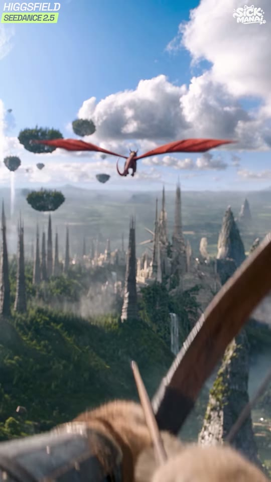
s03_in_06.94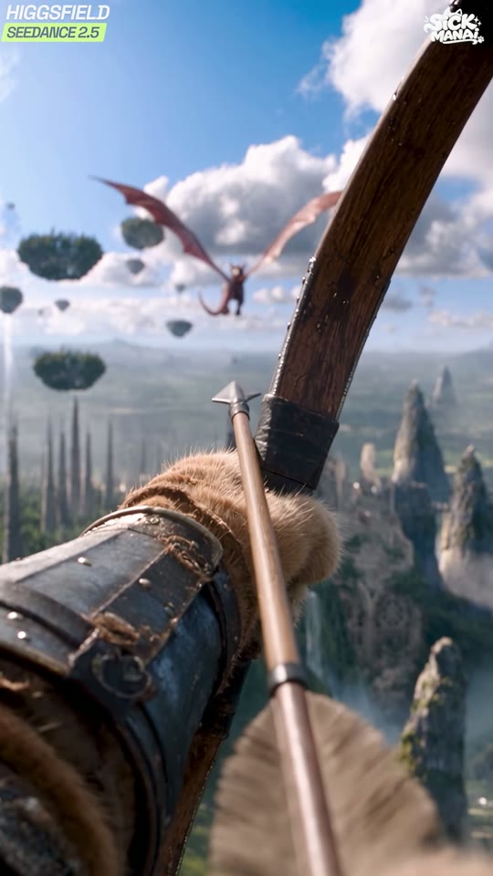
s03_mid_08.10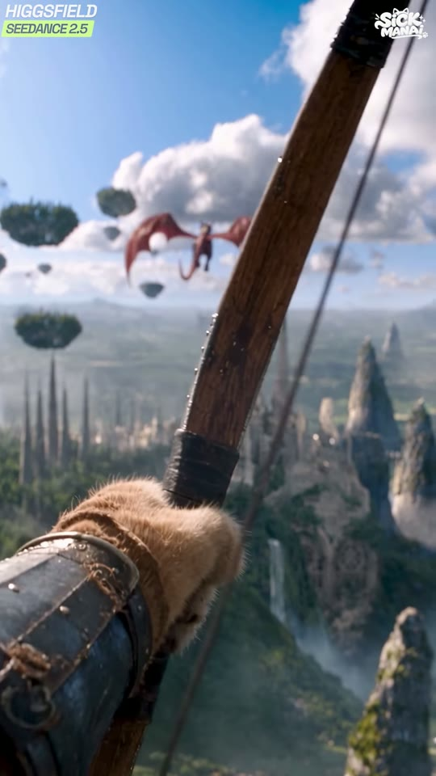
s03_out_09.26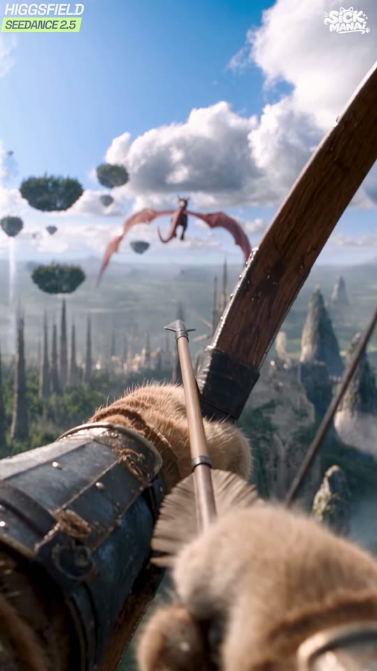
g_07.00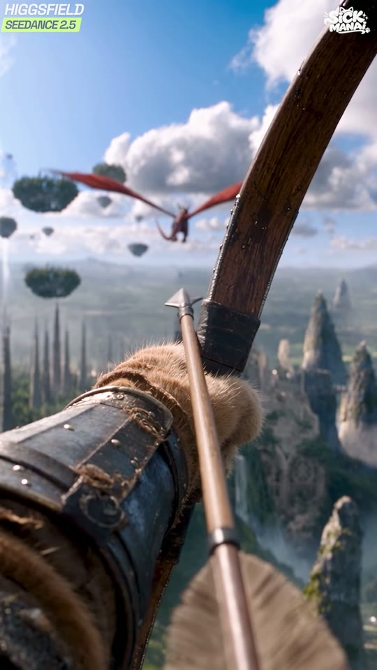
g_08.00| 카메라 움직임 | 1인칭 핸드헬드. 활이 우하단에서 올라오며(6.94s) 조준 자세로 들어오고 8.1s 완전히 당김, 9.26s 발사 직후 살짝 반동. 카메라는 아주 느리게 좌→우 트래킹 |
|---|---|
| 화면 구성(구도) | 드래곤(작게) x45%,y33%, 날개폭 프레임 폭의 50%. 화살촉 x48%,y45%(드래곤 바로 아래 조준). 좌하단 x0-45%,y55-100% 주황 털 앞발+짙은 청색 가죽 팔보호대, 우측 대각선 x40-95%로 나무 장궁. 수평선 y40%, 하단은 첨탑 도시와 절벽 협곡. 전경 하단 화살깃 블러 |
| 동물 행동/연기 | 적 궁수(주황 털 고양이 추정)가 장궁을 들어 올려 드래곤을 겨냥하고 시위를 당겼다가 9.2s에 발사 |
| 배경 | 떠 있는 나무섬들, 흰 첨탑 도시, 폭포가 있는 녹색 협곡과 암봉, 큰 적운 |
| 화면 문구/자막 | 없음 (워터마크만) |
| 다음 컷 전환 | Hard cut — 하드컷(0프레임). 9.33s 컷 = 시위 발사음(9.01s) 직후 → 화살 시점으로 매치 액션 |
| BGM 상태 | 긴장감 있는 낮은 현/드론, 음량 -17~-20 dB |
Vertical 9:16 first-person POV of an archer standing on a high cliff. In the lower-left foreground a furry orange cat paw wrapped in a worn dark-blue leather bracer with brass rivets grips a wooden longbow that crosses the frame diagonally to the upper right; an arrow with steel broadhead is nocked, its tip at 48% x, 45% y, fletching blurred at the bottom. Aiming at a small distant red dragon with a tiny armored rider flying at 45% x, 33% y among floating tree islands. Below: a fantasy kingdom of white gothic stone spires and cathedral towers, floating rock islands topped with trees, waterfalls, green valleys, bright sunny blue sky with large white cumulus clouds. Horizon at 40% y. 24mm lens, deep focus on the dragon, foreground paw slightly soft. photorealistic live-action fantasy film still, ultra-detailed fur and scales, natural bright daylight, cinematic color grade with saturated red and teal-blue, shallow depth of field, 8k
First-person POV: the cat archer raises the longbow from the lower right into aim, slowly draws the string to full tension (bow limb bends, paw trembles slightly), tracks the flying dragon for one second, then releases at the end — the arrow leaves the frame and the string snaps forward. Handheld breathing motion. 2.5 seconds.
cartoon, 3D render look, anime, plastic fur, extra limbs, extra ears, deformed paws, human hands, text, subtitles, logo, watermark, blurry face, duplicate characters, bow on wrong ear, changing armor design, dark night scene, low resolution
image2video 9:16, 5s → 2.46s(74프레임). 발사가 마지막 0.2s에 오도록 '발사 at the end' 명시
concat (no xfade) — clip trimmed to 74 frames
다음 clip의 data-start를 이 clip의 end와 동일하게 두는 단순 컷
Vertical 9:16 first-person POV of an archer standing on a high cliff. In the lower-left foreground a furry orange cat paw wrapped in a worn dark-blue leather bracer with brass rivets grips a wooden longbow that crosses the frame diagonally to the upper right; an arrow with steel broadhead is nocked, its tip at 48% x, 45% y, fletching blurred at the bottom. Aiming at a small distant red dragon with a tiny armored rider flying at 45% x, 33% y among floating tree islands. Below: a fantasy kingdom of white gothic stone spires and cathedral towers, floating rock islands topped with trees, waterfalls, green valleys, bright sunny blue sky with large white cumulus clouds. Horizon at 40% y. 24mm lens, deep focus on the dragon, foreground paw slightly soft. photorealistic live-action fantasy film still, ultra-detailed fur and scales, natural bright daylight, cinematic color grade with saturated red and teal-blue, shallow depth of field, 8k
First-person POV: the cat archer raises the longbow from the lower right into aim, slowly draws the string to full tension (bow limb bends, paw trembles slightly), tracks the flying dragon for one second, then releases at the end — the arrow leaves the frame and the string snaps forward. Handheld breathing motion. 2.5 seconds.
적 궁수는 그대로 고양이 앞발 유지(포식자 vs 햄스터 구도 강화). 원거리 라이더만 햄스터로
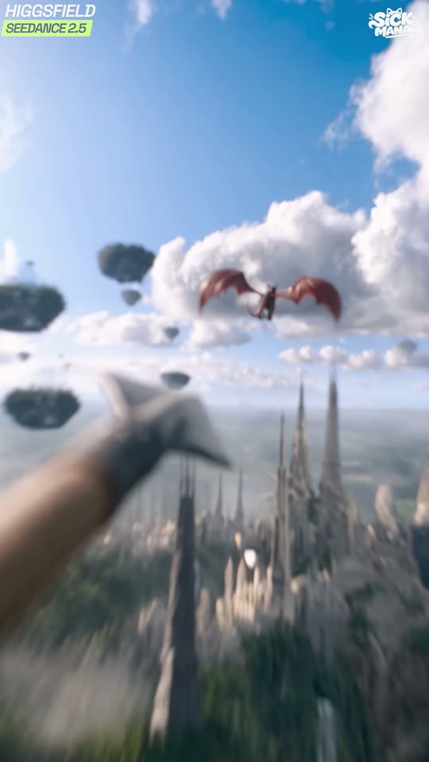
s04_in_09.40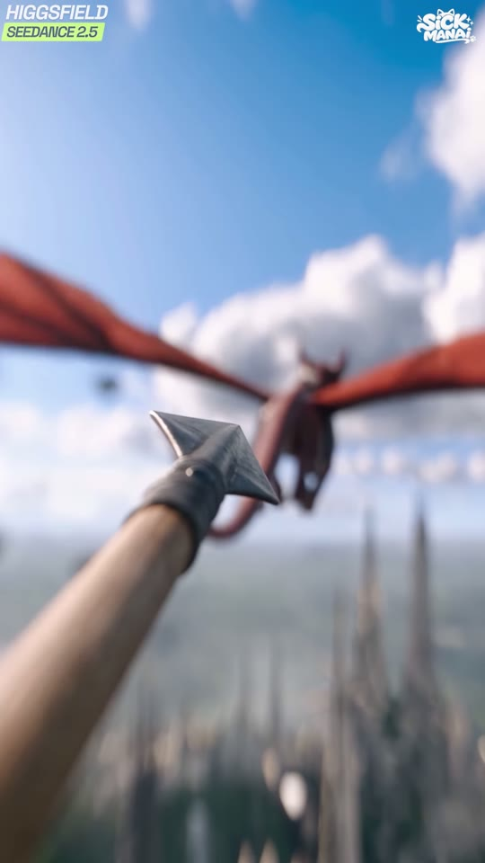
g_10.00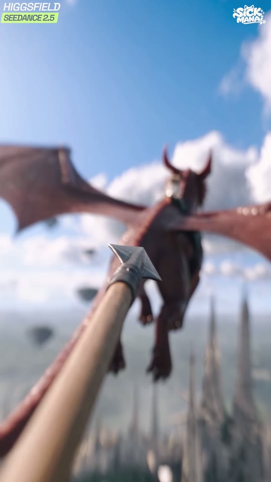
s04_mid_11.43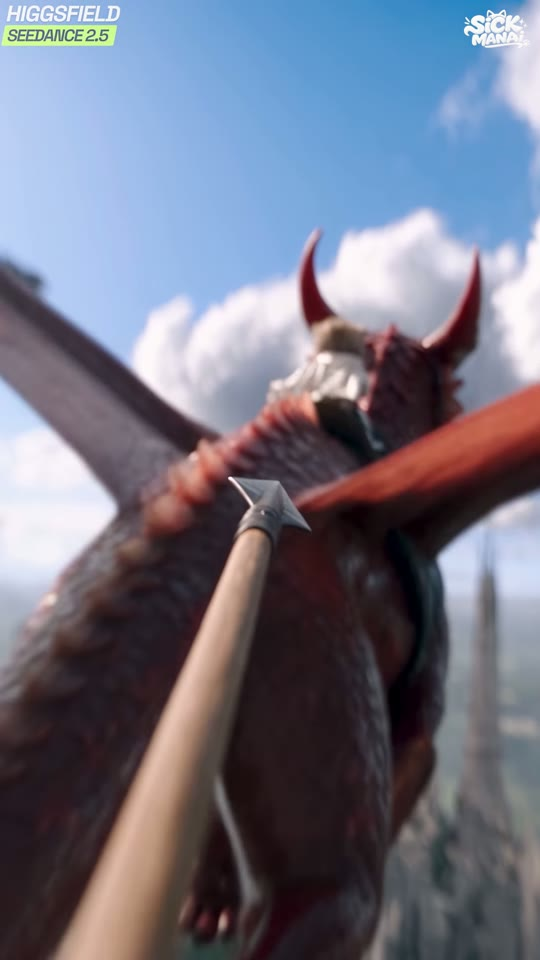
g_12.00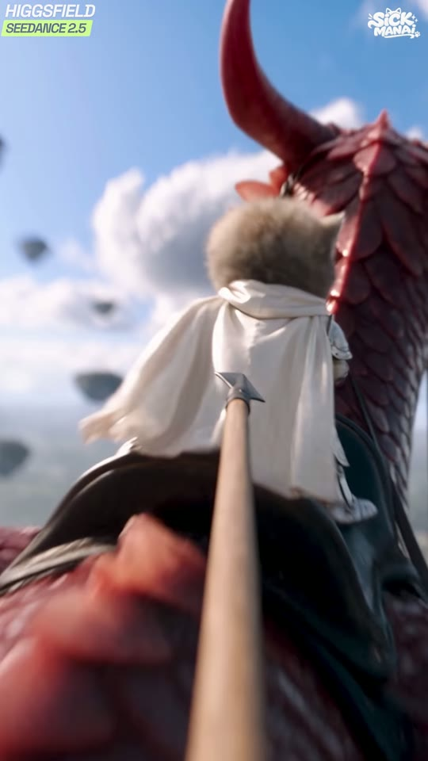
s04_out_13.46| 카메라 움직임 | 화살 뒤에 붙어 날아가는 추적 카메라(bullet-time 아님, 실속도). 9.40s 발사 직후 강한 방향성 모션블러(약 3프레임) → 드래곤에게 빠르게 전진(푸시인), 13.46s 화살촉이 새끼고양이 망토 바로 뒤. 배경 심도 매우 얕음 |
|---|---|
| 화면 구성(구도) | 화살촉 고정 x48%,y52%, 화살대가 좌하단 모서리에서 대각선으로 들어옴. 드래곤은 10s x55%,y42%(폭 100%) → 12s 등과 라이더 x60%,y38% → 13.46s 망토 x62%,y45%가 프레임 절반. 수평선 y62%(10s) |
| 동물 행동/연기 | 화살이 드래곤을 향해 곧장 날아가 등에 탄 새끼고양이 등 뒤까지 도달(맞기 직전 서스펜스) |
| 배경 | 흐릿한 첨탑 도시, 떠 있는 섬, 큰 적운 |
| 화면 문구/자막 | 없음 (워터마크만) |
| 다음 컷 전환 | Hard cut — 하드컷(0프레임). 13.53s 컷 = 화살이 등 뒤 도달 순간 → 측면 샷으로 '잡기' 리빌(액션 매치 컷) |
| BGM 상태 | 가장 조용한 구간(-20 dB 평탄) — 긴장 유지 드론 |
Vertical 9:16 arrow-cam: a wooden arrow shaft enters from the bottom-left corner, its steel broadhead sharp in focus at 48% x, 52% y, pointing at a red dragon flying away at 55% x, 42% y with wings spread across the full frame width, a tiny armored rider on its back. Extremely shallow depth of field, blurred gothic spire city far below, bright cumulus clouds. 28mm lens, motion blur on the edges. photorealistic live-action fantasy film still, ultra-detailed fur and scales, natural bright daylight, cinematic color grade with saturated red and teal-blue, shallow depth of field, 8k
Arrowhead at 55% x, 50% y just behind the ivory cape and fluffy back of the kitten rider seated on the black saddle; a red dragon horn fills the upper right; everything slightly motion blurred.
Camera flies right behind the speeding arrow, locked to it (arrowhead stays at the same screen spot). Starts with a burst of motion blur at launch, then rushes toward the dragon: the dragon's back and the kitten rider grow bigger until the arrowhead is just behind the rider's ivory cape at the end. Wind turbulence shake. The dragon keeps flying forward, unaware. 4 seconds.
cartoon, 3D render look, anime, plastic fur, extra limbs, extra ears, deformed paws, human hands, text, subtitles, logo, watermark, blurry face, duplicate characters, bow on wrong ear, changing armor design, dark night scene, low resolution
first-last frame(시작=멀리 드래곤, 끝=망토 바로 뒤) 5s → 4.20s(126프레임). 화살이 화면에서 고정되도록 'camera locked to arrow' 강조
concat (no xfade) — clip trimmed to 126 frames
다음 clip의 data-start를 이 clip의 end와 동일하게 두는 단순 컷
Vertical 9:16 arrow-cam: a wooden arrow shaft enters from the bottom-left corner, its steel broadhead sharp in focus at 48% x, 52% y, pointing at a red dragon flying away at 55% x, 42% y with wings spread across the full frame width, a tiny armored rider on its back. Extremely shallow depth of field, blurred gothic spire city far below, bright cumulus clouds. 28mm lens, motion blur on the edges. photorealistic live-action fantasy film still, ultra-detailed fur and scales, natural bright daylight, cinematic color grade with saturated red and teal-blue, shallow depth of field, 8k
Camera flies right behind the speeding arrow, locked to it (arrowhead stays at the same screen spot). Starts with a burst of motion blur at launch, then rushes toward the dragon: the dragon's back and the hamster rider grow bigger until the arrowhead is just behind the rider's ivory cape at the end. Wind turbulence shake. The dragon keeps flying forward, unaware. 4 seconds.
끝프레임의 등 모습을 황금색 털 둥근 등으로. 망토 색 동일
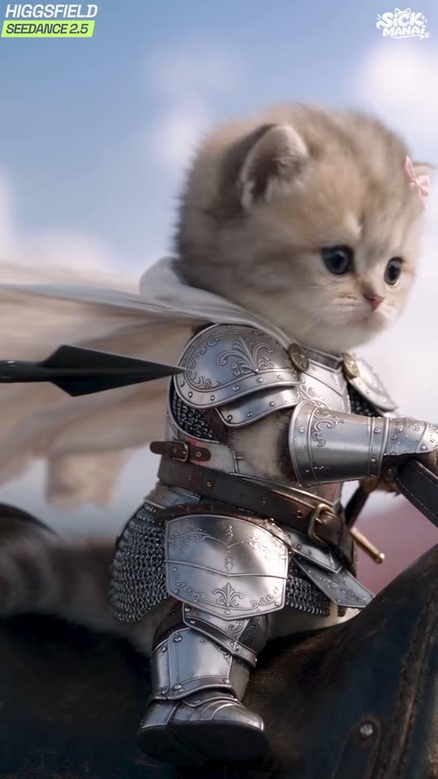
s05_in_13.60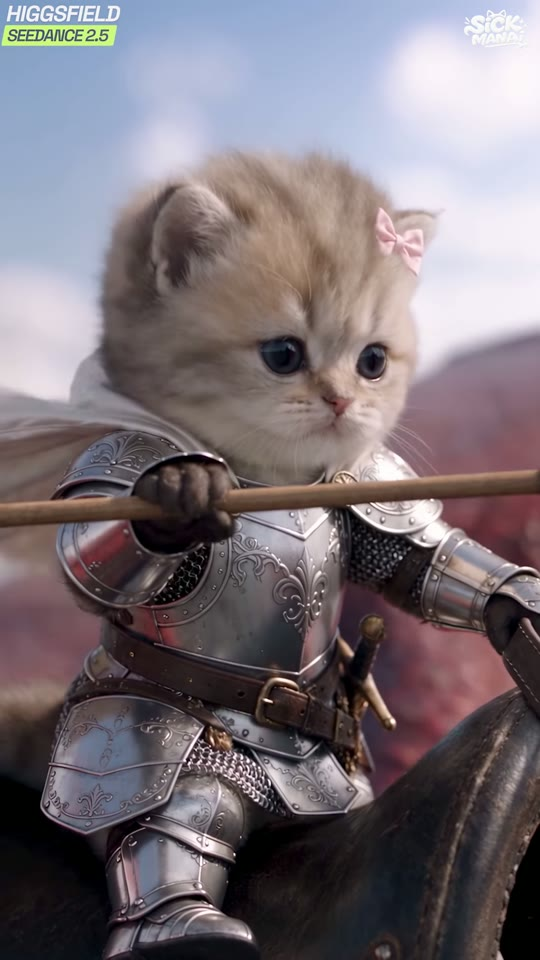
s05_mid_15.65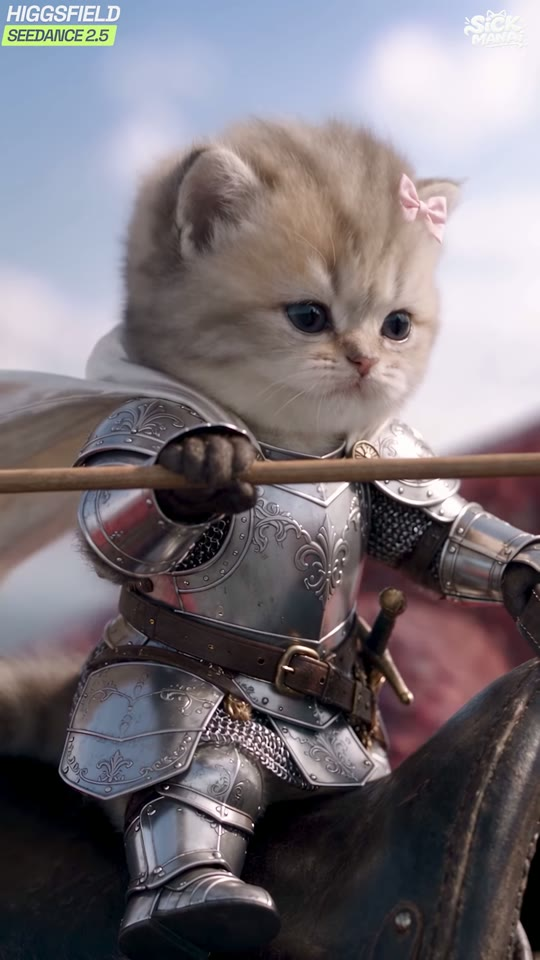
s05_out_17.70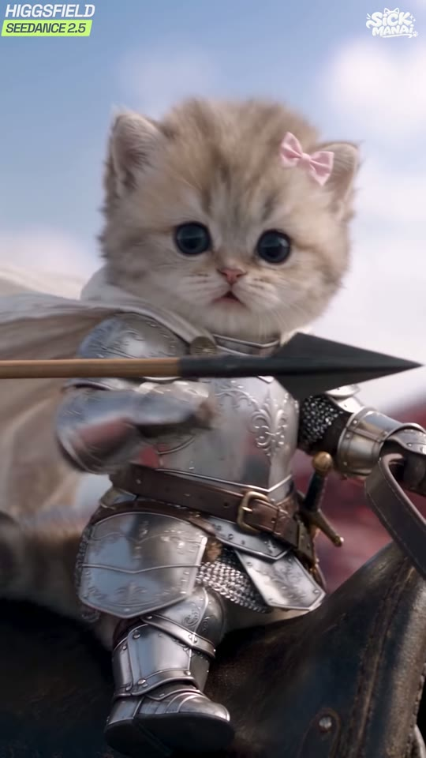
g_14.00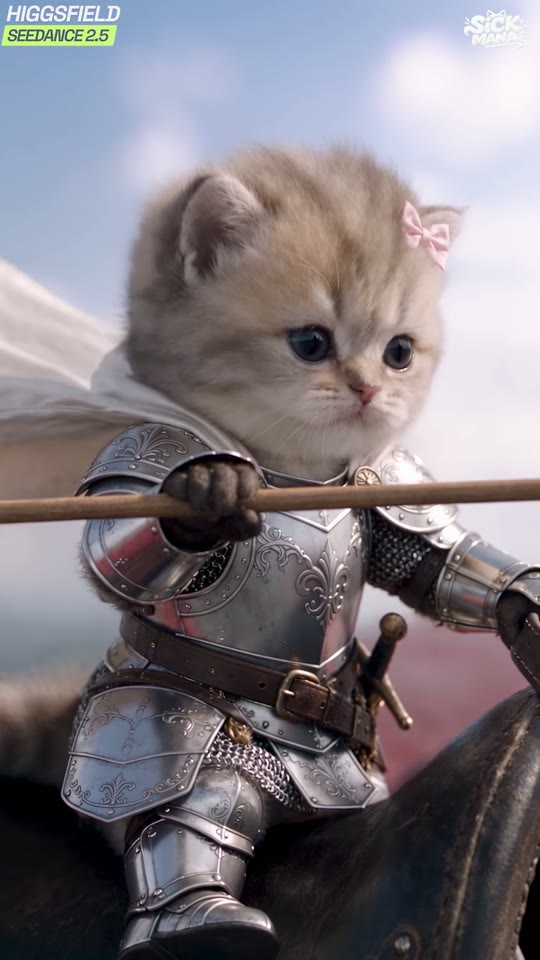
g_16.00| 카메라 움직임 | 거의 고정(락오프), 아주 미세한 흔들림. 동작은 피사체만 |
|---|---|
| 화면 구성(구도) | 새끼고양이 머리 x55%,y32%(13.6s) → x50%,y33%(15.6s), 몸이 프레임 높이 95%(귀 y15% ~ 발 y95%). 화살이 13.6s 좌측 x0-40%,y47%로 수평 진입 → 15.65s 앞발로 잡아 가슴 앞 y50%에 수평으로 가로지름. 배경 흐린 하늘과 붉은 날개. 3분할 우측 수직선에 얼굴 |
| 동물 행동/연기 | 등 뒤로 날아온 화살을 새끼고양이가 쳐다보지도 않고 오른 앞발로 탁 잡음 → 무표정으로 정면을 봄(시크한 '고양이 반사신경' 개그). 이 영상 최고의 리액션 포인트 |
| 배경 | 흐린 하늘·구름, 붉은 드래곤 날개 블러, 안장 |
| 화면 문구/자막 | 없음 (워터마크만) |
| 다음 컷 전환 | Hard cut — 하드컷(0프레임). 17.77s 컷 → 여기서부터 90도 회전 구간 시작(시각적 패턴 전환) |
| BGM 상태 | 조용함 유지(-20 dB). 잡는 순간 짧은 정적/스팅거(추정) |
Vertical 9:16 medium close-up, side 3/4 view facing right. a tiny 8-week-old fluffy cream-beige British longhair kitten with pale grey tabby tips on the forehead and ears, huge round dark slate-blue eyes, small pink nose, long white whiskers, a small pink satin bow on its left ear, wearing polished silver full plate armor engraved with fleur-de-lis filigree on the breastplate, round brass rivet bosses on the pauldrons, chainmail at the waist and underarms, a brown leather belt with brass buckle, a short sword with brass crossguard in a dark leather scabbard on the left hip, silver gauntlets and sabatons, and a short ivory linen cape, sitting on a black leather saddle on a flying red dragon, head at 55% x, 32% y, body filling 95% of the frame height, calm neutral face looking forward-right. An arrow with black steel broadhead flies in from the left edge at 47% y just behind its cape. Soft blue sky with blurred clouds and a blurred red wing in the background. 85mm lens, f/2, creamy bokeh. photorealistic live-action fantasy film still, ultra-detailed fur and scales, natural bright daylight, cinematic color grade with saturated red and teal-blue, shallow depth of field, 8k
a tiny 8-week-old fluffy cream-beige British longhair kitten with pale grey tabby tips on the forehead and ears, huge round dark slate-blue eyes, small pink nose, long white whiskers, a small pink satin bow on its left ear, wearing polished silver full plate armor engraved with fleur-de-lis filigree on the breastplate, round brass rivet bosses on the pauldrons, chainmail at the waist and underarms, a brown leather belt with brass buckle, a short sword with brass crossguard in a dark leather scabbard on the left hip, silver gauntlets and sabatons, and a short ivory linen cape holding a wooden arrow horizontally across its chest with its right paw, head at 50% x, 33% y, deadpan face looking at camera, pink bow on the left ear.
Without turning its head, the kitten knight casually snaps up its right armored paw and catches the flying arrow by the shaft behind its back, then brings the arrow in front of its chest, holding it horizontally, and slowly looks toward the camera with a deadpan unimpressed face. Cape and fur flutter in the wind, camera locked-off. Arrow stays intact and straight. 4 seconds.
cartoon, 3D render look, anime, plastic fur, extra limbs, extra ears, deformed paws, human hands, text, subtitles, logo, watermark, blurry face, duplicate characters, bow on wrong ear, changing armor design, dark night scene, low resolution
first-last frame 5s → 4.24s(127프레임). 잡는 동작이 1s 안에 끝나고 나머지는 '무표정 홀드'가 되도록 지시
concat (no xfade) — clip trimmed to 127 frames
다음 clip의 data-start를 이 clip의 end와 동일하게 두는 단순 컷
Vertical 9:16 medium close-up, side 3/4 view facing right. a tiny baby golden Syrian hamster with fluffy golden-orange fur, cream-white cheeks and belly, big glossy round black eyes, small pink nose, tiny pink paws, round translucent pink ears, long fine whiskers, a small pink satin bow on its left ear, wearing polished silver full plate armor engraved with fleur-de-lis filigree on the breastplate, round brass rivet bosses on the pauldrons, chainmail at the waist and underarms, a brown leather belt with brass buckle, a short sword with brass crossguard in a dark leather scabbard on the left hip, silver gauntlets and sabatons, and a short ivory linen cape, sitting on a black leather saddle on a flying red dragon, head at 55% x, 32% y, body filling 95% of the frame height, calm neutral face looking forward-right. An arrow with black steel broadhead flies in from the left edge at 47% y just behind its cape. Soft blue sky with blurred clouds and a blurred red wing in the background. 85mm lens, f/2, creamy bokeh. photorealistic live-action fantasy film still, ultra-detailed fur and scales, natural bright daylight, cinematic color grade with saturated red and teal-blue, shallow depth of field, 8k
Without turning its head, the hamster knight casually snaps up its right armored paw and catches the flying arrow by the shaft behind its back, then brings the arrow in front of its chest, holding it horizontally, and slowly looks toward the camera with a deadpan unimpressed face. Cape and fur flutter in the wind, camera locked-off. Arrow stays intact and straight. 4 seconds.
햄스터는 앞발이 짧다 → 화살을 양손으로 끌어안듯 잡게 해도 좋음. 볼 부풀리기(치즈볼) 표정으로 개그 강화
| 카메라 움직임 | [90도 회전 푸티지] 원본 16:9에서 카메라가 드래곤 목 옆에 붙어 천천히 머리 쪽으로 궤도 이동. 드래곤 머리가 아래(절벽)로 숙였다가 카메라 쪽으로 돌림. 세로 화면에서는 '머리가 아래로 향한' 기울어진 세상으로 보임 |
|---|---|
| 화면 구성(구도) | [세로 최종] 새끼고양이 x45%,y10%(좌상단), 드래곤 머리 x55%,y65%, 눈 x75%,y58%, 절벽 좌하단 x0-45%,y60-100%, 하늘 우측. [원본 가로] 목이 좌→우 가로지르고 라이더는 좌측 x10%,y55%, 머리 x65%,y45%로 아래 절벽을 내려다봄, 해안 절벽 우하단, 수평선(바다) 하단 y75%. 절벽 끝에 아주 작은 병사 실루엣(세로 x48%,y92%) |
| 동물 행동/연기 | 드래곤이 해안 절벽 위를 지나며 머리를 숙여 적을 내려다보고, 라이더 새끼고양이도 아래를 봄. 정찰/발견 비트 |
| 배경 | 바다 해안 절벽(이끼 낀 회색 바위), 푸른 바다, 하늘 |
| 화면 문구/자막 | 없음 (워터마크만) |
| 다음 컷 전환 | Hard cut — 하드컷(0프레임). 20.90s 컷 |
| BGM 상태 | 현악 크레센도 시작(추정), -18 dB |
GENERATE IN 16:9 LANDSCAPE, normal upright orientation (sky at top, ground at bottom). In the edit this clip is rotated 90 degrees clockwise to fill 9:16. 16:9 landscape close shot from beside a dragon's neck. a massive crimson-red western dragon with glossy overlapping ruby scales flecked with tiny iridescent glints, a crest of pale-red spikes along the neck and jaw, two long curved horns red at the base fading to charcoal-black tips, amber-gold reptile eyes, huge bat wings with translucent red membranes, a black leather bridle with steel rings and long black reins, and a black leather saddle with stirrups at the base of its neck: its long spiked neck runs horizontally across the frame from left to right, the head at 65% x, 45% y lowered and looking down at a mossy grey sea cliff in the bottom-right corner where a tiny armored figure stands on the edge. At the far left, at 10% x, 55% y, sits a tiny 8-week-old fluffy cream-beige British longhair kitten with pale grey tabby tips on the forehead and ears, huge round dark slate-blue eyes, small pink nose, long white whiskers, a small pink satin bow on its left ear, wearing polished silver full plate armor engraved with fleur-de-lis filigree on the breastplate, round brass rivet bosses on the pauldrons, chainmail at the waist and underarms, a brown leather belt with brass buckle, a short sword with brass crossguard in a dark leather scabbard on the left hip, silver gauntlets and sabatons, and a short ivory linen cape in the saddle, leaning to look down. Calm blue sea below, pale sky above. 24mm lens, close to the scales, very detailed. photorealistic live-action fantasy film still, ultra-detailed fur and scales, natural bright daylight, cinematic color grade with saturated red and teal-blue, shallow depth of field, 8k
Camera slowly orbits along the dragon's neck toward its head. The dragon lowers its head over the sea cliff, then turns its amber eye toward the camera; the kitten rider leans forward to peer down. Wind moves fur and cape. Subtle flight bob. Do NOT flip or rotate the camera (rotation is done in editing). 3 seconds.
cartoon, 3D render look, anime, plastic fur, extra limbs, extra ears, deformed paws, human hands, text, subtitles, logo, watermark, blurry face, duplicate characters, bow on wrong ear, changing armor design, dark night scene, low resolution
16:9 1920x1080 image2video 5s → 3.13s(94프레임). 편집에서 transpose=1(시계방향 90도)
concat (no xfade) — clip trimmed to 94 frames
다음 clip의 data-start를 이 clip의 end와 동일하게 두는 단순 컷
GENERATE IN 16:9 LANDSCAPE, normal upright orientation (sky at top, ground at bottom). In the edit this clip is rotated 90 degrees clockwise to fill 9:16. 16:9 landscape close shot from beside a dragon's neck. a massive crimson-red western dragon with glossy overlapping ruby scales flecked with tiny iridescent glints, a crest of pale-red spikes along the neck and jaw, two long curved horns red at the base fading to charcoal-black tips, amber-gold reptile eyes, huge bat wings with translucent red membranes, a black leather bridle with steel rings and long black reins, and a black leather saddle with stirrups at the base of its neck: its long spiked neck runs horizontally across the frame from left to right, the head at 65% x, 45% y lowered and looking down at a mossy grey sea cliff in the bottom-right corner where a tiny armored figure stands on the edge. At the far left, at 10% x, 55% y, sits a tiny baby golden Syrian hamster with fluffy golden-orange fur, cream-white cheeks and belly, big glossy round black eyes, small pink nose, tiny pink paws, round translucent pink ears, long fine whiskers, a small pink satin bow on its left ear, wearing polished silver full plate armor engraved with fleur-de-lis filigree on the breastplate, round brass rivet bosses on the pauldrons, chainmail at the waist and underarms, a brown leather belt with brass buckle, a short sword with brass crossguard in a dark leather scabbard on the left hip, silver gauntlets and sabatons, and a short ivory linen cape in the saddle, leaning to look down. Calm blue sea below, pale sky above. 24mm lens, close to the scales, very detailed. photorealistic live-action fantasy film still, ultra-detailed fur and scales, natural bright daylight, cinematic color grade with saturated red and teal-blue, shallow depth of field, 8k
Camera slowly orbits along the dragon's neck toward its head. The dragon lowers its head over the sea cliff, then turns its amber eye toward the camera; the hamster rider leans forward to peer down. Wind moves fur and cape. Subtle flight bob. Do NOT flip or rotate the camera (rotation is done in editing). 3 seconds.
라이더는 원본에서도 잘려서 보이므로 황금 털 머리와 핑크 리본만 확실히
| 카메라 움직임 | [회전] 원본: 카메라가 드래곤 정면 앞에서 후진 비행(리드 샷), 강한 모션블러 배경. 23.0s 입 안에서 붉은 빛이 차오르고 24.0s 불을 뿜음(카메라 아래쪽으로 불줄기) |
|---|---|
| 화면 구성(구도) | [세로 최종] 드래곤 머리 x40%,y40%(정면), 새끼고양이 x78%,y45%(머리 오른쪽 = 원본 위쪽), 날개 상단 y0-30%·하단 y60-100%로 X자, 불줄기 좌하단 x0-45%,y55-100%, 초원 좌측, 하늘 우측. [원본] 머리 x40%,y60%, 라이더 x45%,y22%, 불은 우하단 지면 방향, 수평선 y30% 근처 |
| 동물 행동/연기 | 드래곤이 카메라를 향해 돌진하며 목구멍에 불빛을 모은 뒤 지상(적)으로 화염 방사. 라이더 새끼고양이는 목 위에서 앞을 봄 |
| 배경 | 녹색 계곡, 흰 도시, 설산, 맑은 하늘 |
| 화면 문구/자막 | 없음 (워터마크만) |
| 다음 컷 전환 | Hard cut — 하드컷(0프레임). 25.20s 컷 = 불 뿜는 최고음(-9.6 dB) 직후, 발사→피격 측 역샷 |
| BGM 상태 | 첫 번째 클라이맥스, 타악 강세(추정). 24s 부근 -12.6 dB 평균 |
GENERATE IN 16:9 LANDSCAPE, normal upright orientation (sky at top, ground at bottom). In the edit this clip is rotated 90 degrees clockwise to fill 9:16. 16:9 landscape head-on lead shot: a massive crimson-red western dragon with glossy overlapping ruby scales flecked with tiny iridescent glints, a crest of pale-red spikes along the neck and jaw, two long curved horns red at the base fading to charcoal-black tips, amber-gold reptile eyes, huge bat wings with translucent red membranes, a black leather bridle with steel rings and long black reins, and a black leather saddle with stirrups at the base of its neck flies straight toward the camera over a green alpine valley with a white city; head at 40% x, 60% y, jaws opening with an orange glow in its throat, wings spread in a wide V to the frame edges. Seated behind the head at 45% x, 22% y: a tiny 8-week-old fluffy cream-beige British longhair kitten with pale grey tabby tips on the forehead and ears, huge round dark slate-blue eyes, small pink nose, long white whiskers, a small pink satin bow on its left ear, wearing polished silver full plate armor engraved with fleur-de-lis filigree on the breastplate, round brass rivet bosses on the pauldrons, chainmail at the waist and underarms, a brown leather belt with brass buckle, a short sword with brass crossguard in a dark leather scabbard on the left hip, silver gauntlets and sabatons, and a short ivory linen cape, gripping the reins. Snowy mountains on the horizon at 30% y, background with strong motion blur. 28mm lens. photorealistic live-action fantasy film still, ultra-detailed fur and scales, natural bright daylight, cinematic color grade with saturated red and teal-blue, shallow depth of field, 8k
Camera flies backward in front of the charging dragon. For 2 seconds the dragon beats its wings toward camera, then its throat glows bright orange and it breathes a thick roaring stream of fire downward-right toward the ground just past the camera. The kitten rider holds on, cape whipping. Heat distortion, embers. Keep upright orientation (rotation added in edit). 4 seconds.
cartoon, 3D render look, anime, plastic fur, extra limbs, extra ears, deformed paws, human hands, text, subtitles, logo, watermark, blurry face, duplicate characters, bow on wrong ear, changing armor design, dark night scene, low resolution
16:9 5s → 4.30s(129프레임). 불 뿜는 시점이 3s째 이후가 되게 타이밍 지시. 편집에서 transpose=1
concat (no xfade) — clip trimmed to 129 frames
다음 clip의 data-start를 이 clip의 end와 동일하게 두는 단순 컷
GENERATE IN 16:9 LANDSCAPE, normal upright orientation (sky at top, ground at bottom). In the edit this clip is rotated 90 degrees clockwise to fill 9:16. 16:9 landscape head-on lead shot: a massive crimson-red western dragon with glossy overlapping ruby scales flecked with tiny iridescent glints, a crest of pale-red spikes along the neck and jaw, two long curved horns red at the base fading to charcoal-black tips, amber-gold reptile eyes, huge bat wings with translucent red membranes, a black leather bridle with steel rings and long black reins, and a black leather saddle with stirrups at the base of its neck flies straight toward the camera over a green alpine valley with a white city; head at 40% x, 60% y, jaws opening with an orange glow in its throat, wings spread in a wide V to the frame edges. Seated behind the head at 45% x, 22% y: a tiny baby golden Syrian hamster with fluffy golden-orange fur, cream-white cheeks and belly, big glossy round black eyes, small pink nose, tiny pink paws, round translucent pink ears, long fine whiskers, a small pink satin bow on its left ear, wearing polished silver full plate armor engraved with fleur-de-lis filigree on the breastplate, round brass rivet bosses on the pauldrons, chainmail at the waist and underarms, a brown leather belt with brass buckle, a short sword with brass crossguard in a dark leather scabbard on the left hip, silver gauntlets and sabatons, and a short ivory linen cape, gripping the reins. Snowy mountains on the horizon at 30% y, background with strong motion blur. 28mm lens. photorealistic live-action fantasy film still, ultra-detailed fur and scales, natural bright daylight, cinematic color grade with saturated red and teal-blue, shallow depth of field, 8k
Camera flies backward in front of the charging dragon. For 2 seconds the dragon beats its wings toward camera, then its throat glows bright orange and it breathes a thick roaring stream of fire downward-right toward the ground just past the camera. The hamster rider holds on, cape whipping. Heat distortion, embers. Keep upright orientation (rotation added in edit). 4 seconds.
햄스터가 드래곤 머리 뒤에서 작게 보임 — 황금+흰 볼 대비로 식별
| 카메라 움직임 | [회전] 락오프에 가까움. 불덩이가 카메라 쪽으로 커지며 다가옴(물체 이동). 초점은 하늘의 드래곤 |
|---|---|
| 화면 구성(구도) | [세로 최종] 악당 뒤통수·어깨 가시 하단 x0-90%,y60-100%(블러), 귀 x40%/x90%, 드래곤 x80%,y20% 작게, 불덩이가 y20%→전체로 확대(26.53s 프레임 70% 차지), 첨탑 도시 좌상단. [원본] 악당 OTS 우측 1/3, 드래곤 좌상단 x20%,y20%, 도시 좌하단 |
| 동물 행동/연기 | 지상의 주황 줄무늬 고양이 악당이 하늘을 올려다보고, 드래곤이 불덩이를 뿜어 그를 향해 날아옴 |
| 배경 | 뾰족한 첨탑 도시, 흐린 원경 산, 맑은 하늘 |
| 화면 문구/자막 | 없음 (워터마크만) |
| 다음 컷 전환 | Hard cut — 하드컷(0프레임). 26.60s 컷 = 불덩이가 화면을 채우기 직전 → 폭발 샷 |
| BGM 상태 | 고조 유지 |
GENERATE IN 16:9 LANDSCAPE, normal upright orientation (sky at top, ground at bottom). In the edit this clip is rotated 90 degrees clockwise to fill 9:16. 16:9 landscape over-the-shoulder shot from behind a large battle-scarred orange tabby cat warlord in blackened spiked steel plate armor with a torn rust-brown cape, his left eye replaced by a glowing red-orange ember eye, his blurred spiked black pauldron and furry orange ears filling the right third of the frame in the foreground, looking up-left at the sky. Far away at 20% x, 20% y a small red dragon with a rider hovers and spits a glowing fireball. Bottom-left: silhouettes of pointed spires of a fantasy city in haze. Rack focus on the dragon. 35mm lens. photorealistic live-action fantasy film still, ultra-detailed fur and scales, natural bright daylight, cinematic color grade with saturated red and teal-blue, shallow depth of field, 8k
Locked-off OTS. The distant dragon hovers and spits a huge fireball that rushes toward the camera, growing rapidly until it covers most of the frame at the end; the villain cat in the foreground flinches slightly. Upright orientation. 1.5 seconds of action.
cartoon, 3D render look, anime, plastic fur, extra limbs, extra ears, deformed paws, human hands, text, subtitles, logo, watermark, blurry face, duplicate characters, bow on wrong ear, changing armor design, dark night scene, low resolution
16:9 5s 생성 후 불덩이가 날아오는 1.4s(42프레임)만 사용
concat (no xfade) — clip trimmed to 42 frames
다음 clip의 data-start를 이 clip의 end와 동일하게 두는 단순 컷
GENERATE IN 16:9 LANDSCAPE, normal upright orientation (sky at top, ground at bottom). In the edit this clip is rotated 90 degrees clockwise to fill 9:16. 16:9 landscape over-the-shoulder shot from behind a large battle-scarred orange tabby cat warlord in blackened spiked steel plate armor with a torn rust-brown cape, his left eye replaced by a glowing red-orange ember eye, his blurred spiked black pauldron and furry orange ears filling the right third of the frame in the foreground, looking up-left at the sky. Far away at 20% x, 20% y a small red dragon with a rider hovers and spits a glowing fireball. Bottom-left: silhouettes of pointed spires of a fantasy city in haze. Rack focus on the dragon. 35mm lens. photorealistic live-action fantasy film still, ultra-detailed fur and scales, natural bright daylight, cinematic color grade with saturated red and teal-blue, shallow depth of field, 8k
Locked-off OTS. The distant dragon hovers and spits a huge fireball that rushes toward the camera, growing rapidly until it covers most of the frame at the end; the villain cat in the foreground flinches slightly. Upright orientation. 1.5 seconds of action.
악당은 그대로 고양이(햄스터 vs 고양이 구도 유지)
| 카메라 움직임 | [회전] 거의 고정, 폭발 충격으로 미세 흔들림 |
|---|---|
| 화면 구성(구도) | [세로 최종] 지면(바위) 좌측 x0-25%, 악당 전신 x10-75%,y57-90%(머리 x70%,y75%), 불덩이 상단 x35-90%,y0-30% → 28s 전체 배경 화염, 29.3s 연기와 불줄기(x25%, 세로로 선형). [원본] 악당 우측 x60-90%, 지면 하단 y75-100%, 불덩이 좌측에서 충돌 |
| 동물 행동/연기 | 불덩이가 악당 옆에서 폭발, 악당은 팔로 막으며 웅크렸다가 화염 속에서 붉은 눈을 빛내며 버텨냄(29.3s 연기 속 생존) |
| 배경 | 검은 바위 고원, 화염, 짙은 회색 연기, 불티 |
| 화면 문구/자막 | 없음 (워터마크만) |
| 다음 컷 전환 | Hard cut — 하드컷(0프레임). 29.40s 컷 |
| BGM 상태 | 폭발에 맞춰 음악 덕킹(추정), 26-28s -13.5 dB 평균 |
GENERATE IN 16:9 LANDSCAPE, normal upright orientation (sky at top, ground at bottom). In the edit this clip is rotated 90 degrees clockwise to fill 9:16. 16:9 landscape low side shot on a dark rocky plateau: a large battle-scarred orange tabby cat warlord in blackened spiked steel plate armor with a torn rust-brown cape, his left eye replaced by a glowing red-orange ember eye stands braced at 75% x, feet on the ground at the bottom, facing left toward a gigantic orange fireball exploding at 15% x, 40% y. Hazy mountains and sky behind. Ground line at 78% y. 35mm lens. photorealistic live-action fantasy film still, ultra-detailed fur and scales, natural bright daylight, cinematic color grade with saturated red and teal-blue, shallow depth of field, 8k
The villain cat standing in thick grey smoke, glowing red-orange eye, embers floating, a vertical line of fire along the ground.
The fireball slams into the ground next to the villain cat and erupts into a wall of fire and smoke; the cat crouches and shields his face with his armored arm, is swallowed by flames, then slowly straightens up inside the smoke with his ember eye glowing, a line of fire burning on the ground. Upright orientation. 3 seconds.
cartoon, 3D render look, anime, plastic fur, extra limbs, extra ears, deformed paws, human hands, text, subtitles, logo, watermark, blurry face, duplicate characters, bow on wrong ear, changing armor design, dark night scene, low resolution
16:9 5s → 2.80s(84프레임). 편집 transpose=1
concat (no xfade) — clip trimmed to 84 frames
다음 clip의 data-start를 이 clip의 end와 동일하게 두는 단순 컷
GENERATE IN 16:9 LANDSCAPE, normal upright orientation (sky at top, ground at bottom). In the edit this clip is rotated 90 degrees clockwise to fill 9:16. 16:9 landscape low side shot on a dark rocky plateau: a large battle-scarred orange tabby cat warlord in blackened spiked steel plate armor with a torn rust-brown cape, his left eye replaced by a glowing red-orange ember eye stands braced at 75% x, feet on the ground at the bottom, facing left toward a gigantic orange fireball exploding at 15% x, 40% y. Hazy mountains and sky behind. Ground line at 78% y. 35mm lens. photorealistic live-action fantasy film still, ultra-detailed fur and scales, natural bright daylight, cinematic color grade with saturated red and teal-blue, shallow depth of field, 8k
The fireball slams into the ground next to the villain cat and erupts into a wall of fire and smoke; the cat crouches and shields his face with his armored arm, is swallowed by flames, then slowly straightens up inside the smoke with his ember eye glowing, a line of fire burning on the ground. Upright orientation. 3 seconds.
변경 없음(악당 고양이)
| 카메라 움직임 | [회전] 락오프(흐름 0.32px/f). 피사체만 움직임 |
|---|---|
| 화면 구성(구도) | [세로 최종] 악당 머리 x62%,y60%, 전신 y50-75% 가로로 누움, 드래곤 x78%,y30% 작게, 32.4s 오른 주먹 x80%,y50%, 병사들 상단 x25-45%,y0-45%와 하단 y75-90%에 줄지어 등장. [원본] 악당 x60%,y35% 중앙우측, 드래곤 좌상단 x30%,y25%, 병사들 좌우 배경, 지면 y78% |
| 동물 행동/연기 | 악당이 일어나 드래곤을 노려보다가 주먹을 번쩍 들어 신호 → 뒤에서 고양이 군단이 줄지어 나타남(반격 준비) |
| 배경 | 연기 걷히는 고원, 원경 산과 도시, 공중에 떠 있는 드래곤 |
| 화면 문구/자막 | 없음 (워터마크만) |
| 다음 컷 전환 | Hard cut — 하드컷(0프레임). 32.47s 컷 = 주먹 신호 직후 → 궁수 일제사격 |
| BGM 상태 | 잠깐 가라앉음(-20 dB) 후 재상승, 군악 드럼(추정) |
GENERATE IN 16:9 LANDSCAPE, normal upright orientation (sky at top, ground at bottom). In the edit this clip is rotated 90 degrees clockwise to fill 9:16. 16:9 landscape low-angle full shot: a large battle-scarred orange tabby cat warlord in blackened spiked steel plate armor with a torn rust-brown cape, his left eye replaced by a glowing red-orange ember eye standing tall at 60% x, head at 35% y, on a smoky rocky plateau, glaring up-left at a red dragon hovering at 30% x, 25% y in a hazy sky. Rows of armored cat soldiers (brown tabbies and Maine coons) in dark leather-and-steel armor holding crossbows and round wooden shields stand in the background on both sides. Embers and fire on the ground at bottom right. 35mm lens. photorealistic live-action fantasy film still, ultra-detailed fur and scales, natural bright daylight, cinematic color grade with saturated red and teal-blue, shallow depth of field, 8k
Locked-off. The villain cat straightens up in the thinning smoke, glares at the dragon, then thrusts his right fist high into the air as a signal; behind him rows of armored cat soldiers step forward and raise their weapons. The dragon keeps hovering, wings beating. Upright orientation. 3 seconds.
cartoon, 3D render look, anime, plastic fur, extra limbs, extra ears, deformed paws, human hands, text, subtitles, logo, watermark, blurry face, duplicate characters, bow on wrong ear, changing armor design, dark night scene, low resolution
16:9 5s → 3.07s(92프레임)
concat (no xfade) — clip trimmed to 92 frames
다음 clip의 data-start를 이 clip의 end와 동일하게 두는 단순 컷
GENERATE IN 16:9 LANDSCAPE, normal upright orientation (sky at top, ground at bottom). In the edit this clip is rotated 90 degrees clockwise to fill 9:16. 16:9 landscape low-angle full shot: a large battle-scarred orange tabby cat warlord in blackened spiked steel plate armor with a torn rust-brown cape, his left eye replaced by a glowing red-orange ember eye standing tall at 60% x, head at 35% y, on a smoky rocky plateau, glaring up-left at a red dragon hovering at 30% x, 25% y in a hazy sky. Rows of armored cat soldiers (brown tabbies and Maine coons) in dark leather-and-steel armor holding crossbows and round wooden shields stand in the background on both sides. Embers and fire on the ground at bottom right. 35mm lens. photorealistic live-action fantasy film still, ultra-detailed fur and scales, natural bright daylight, cinematic color grade with saturated red and teal-blue, shallow depth of field, 8k
Locked-off. The villain cat straightens up in the thinning smoke, glares at the dragon, then thrusts his right fist high into the air as a signal; behind him rows of armored cat soldiers step forward and raise their weapons. The dragon keeps hovering, wings beating. Upright orientation. 3 seconds.
변경 없음
| 카메라 움직임 | [회전] 락오프(0.11px/f). 볼트가 드래곤 쪽으로 날아감 |
|---|---|
| 화면 구성(구도) | [세로 최종] 전경 좌측 병사 뒷모습·석궁(블러) x0-40%, 고딕 대성당 성채 중앙 x20-85%,y10-60%, 드래곤 x72%,y50%, 하늘 우측, 떠 있는 섬 상단. [원본] 전경 하단 병사들, 성채 중앙, 드래곤 x50%,y28%, 절벽 사이 협곡 |
| 동물 행동/연기 | 절벽 위 고양이 석궁병들이 드래곤을 향해 일제 사격, 볼트 여러 발이 날아감(35.06s) |
| 배경 | 흰 고딕 대성당(장미창), 떠 있는 나무섬, 폭포, 큰 적운, 짙은 파란 하늘 |
| 화면 문구/자막 | 없음 (워터마크만) |
| 다음 컷 전환 | Hard cut — 하드컷(0프레임). 35.13s 컷 |
| BGM 상태 | 재상승, 타악 연타(추정) |
GENERATE IN 16:9 LANDSCAPE, normal upright orientation (sky at top, ground at bottom). In the edit this clip is rotated 90 degrees clockwise to fill 9:16. 16:9 landscape wide shot from behind a row of armored cat soldiers (brown tabbies and Maine coons) in dark leather-and-steel armor holding crossbows and round wooden shields kneeling on a grassy cliff edge in the blurred lower foreground, aiming crossbows across a deep chasm at a red dragon hovering at 50% x, 28% y in front of a vast white gothic cathedral castle with rose windows built on the opposite cliff; floating tree islands, waterfalls, towering cumulus clouds, deep blue sky. 24mm lens. photorealistic live-action fantasy film still, ultra-detailed fur and scales, natural bright daylight, cinematic color grade with saturated red and teal-blue, shallow depth of field, 8k
Locked-off. The cat crossbowmen fire a staggered volley; several bolts streak across the chasm toward the hovering dragon, which beats its wings. Upright orientation. 2.5 seconds.
cartoon, 3D render look, anime, plastic fur, extra limbs, extra ears, deformed paws, human hands, text, subtitles, logo, watermark, blurry face, duplicate characters, bow on wrong ear, changing armor design, dark night scene, low resolution
16:9 5s → 2.66s(80프레임)
concat (no xfade) — clip trimmed to 80 frames
다음 clip의 data-start를 이 clip의 end와 동일하게 두는 단순 컷
GENERATE IN 16:9 LANDSCAPE, normal upright orientation (sky at top, ground at bottom). In the edit this clip is rotated 90 degrees clockwise to fill 9:16. 16:9 landscape wide shot from behind a row of armored cat soldiers (brown tabbies and Maine coons) in dark leather-and-steel armor holding crossbows and round wooden shields kneeling on a grassy cliff edge in the blurred lower foreground, aiming crossbows across a deep chasm at a red dragon hovering at 50% x, 28% y in front of a vast white gothic cathedral castle with rose windows built on the opposite cliff; floating tree islands, waterfalls, towering cumulus clouds, deep blue sky. 24mm lens. photorealistic live-action fantasy film still, ultra-detailed fur and scales, natural bright daylight, cinematic color grade with saturated red and teal-blue, shallow depth of field, 8k
Locked-off. The cat crossbowmen fire a staggered volley; several bolts streak across the chasm toward the hovering dragon, which beats its wings. Upright orientation. 2.5 seconds.
변경 없음(드래곤 위 라이더는 식별 불가 크기)
| 카메라 움직임 | [회전] 고정. 화염이 화면 전체를 덮으며 '파이어 와이프'로 끝남(36.1s부터 6프레임 만에 전면 주황) |
|---|---|
| 화면 구성(구도) | [세로 최종] 둥근 방패 병사 x20-55%,y20-50%, 망토 병사 x5-45%,y60-72%, 드래곤 x75%,y45%에서 좌측으로 수평 화염. 36.1s 이후 프레임 100% 주황 화염. [원본] 드래곤 x45%,y25%에서 아래로 화염, 병사 하단 |
| 동물 행동/연기 | 드래곤이 방패를 든 고양이 병사들에게 화염을 뿜어 화면 전체를 삼킴 |
| 배경 | 대성당 성채, 파란 하늘, 구름 |
| 화면 문구/자막 | 없음 (워터마크만) |
| 다음 컷 전환 | Fire-fill wipe (in-camera) + hard cut — 화염이 렌즈를 완전히 덮은 상태(36.13~36.80s, 프레임 전부 주황)에서 하드컷 → 다음 샷도 화염 배경으로 시작. 감지기가 'flash'로 오인. 흰색 플래시 아님 |
| BGM 상태 | 최대 음량 구간(-9 dB) |
GENERATE IN 16:9 LANDSCAPE, normal upright orientation (sky at top, ground at bottom). In the edit this clip is rotated 90 degrees clockwise to fill 9:16. 16:9 landscape: on a grassy ledge in front of a white gothic cathedral castle, armored cat soldiers (brown tabbies and Maine coons) in dark leather-and-steel armor holding crossbows and round wooden shields crouch behind round wooden shields as a massive crimson-red western dragon with glossy overlapping ruby scales flecked with tiny iridescent glints hovering at 45% x, 25% y breathes a huge torrent of fire down at them. Deep blue sky, cumulus clouds, floating islands. 28mm lens. photorealistic live-action fantasy film still, ultra-detailed fur and scales, natural bright daylight, cinematic color grade with saturated red and teal-blue, shallow depth of field, 8k
Entire frame filled with bright orange-yellow fire, no other detail.
The dragon's fire stream hits the shield wall and billows outward until the flames completely fill the entire frame edge to edge in the last 0.6 seconds (pure orange fire, no background visible). Upright orientation. 2 seconds.
cartoon, 3D render look, anime, plastic fur, extra limbs, extra ears, deformed paws, human hands, text, subtitles, logo, watermark, blurry face, duplicate characters, bow on wrong ear, changing armor design, dark night scene, low resolution
16:9 5s → 1.67s(50프레임). 끝프레임을 '전면 화염'으로 제어하면 전환 재현 확실
clip 자체에 화염 전면 커버 포함 — 필요 시 마지막 0.2s에 color=c=0xF7B06A overlay fade in: [v]...,fade=t=out:st=1.47:d=0.2:color=0xF7B06A
clip 끝 0.2s에 주황(#F7B06A) 풀프레임 div opacity 0→1 GSAP tween, 다음 clip 시작 시 즉시 0
GENERATE IN 16:9 LANDSCAPE, normal upright orientation (sky at top, ground at bottom). In the edit this clip is rotated 90 degrees clockwise to fill 9:16. 16:9 landscape: on a grassy ledge in front of a white gothic cathedral castle, armored cat soldiers (brown tabbies and Maine coons) in dark leather-and-steel armor holding crossbows and round wooden shields crouch behind round wooden shields as a massive crimson-red western dragon with glossy overlapping ruby scales flecked with tiny iridescent glints hovering at 45% x, 25% y breathes a huge torrent of fire down at them. Deep blue sky, cumulus clouds, floating islands. 28mm lens. photorealistic live-action fantasy film still, ultra-detailed fur and scales, natural bright daylight, cinematic color grade with saturated red and teal-blue, shallow depth of field, 8k
The dragon's fire stream hits the shield wall and billows outward until the flames completely fill the entire frame edge to edge in the last 0.6 seconds (pure orange fire, no background visible). Upright orientation. 2 seconds.
변경 없음
| 카메라 움직임 | [회전] 핸드헬드 급가속(2.2px/f). 흰 도끼 고양이가 카메라 가까이 뛰어올라 블러로 스쳐감(37.58s) |
|---|---|
| 화면 구성(구도) | [세로 최종] 지면 좌측, 병사 2명 상단 x15-60%,y0-40%, 흰 메인쿤 x10-85%,y40-75% 도약, 석궁병 하단 x20-80%,y85-100%, 배경 전체 화염. [원본] 병사들 서 있고 흰 전사가 중앙에서 위로 도약 |
| 동물 행동/연기 | 화염 벽 앞에서 흰 장모 메인쿤 전사가 쌍날 도끼를 들고 도약해 드래곤에게 돌진, 병사들은 석궁을 겨눔 |
| 배경 | 화염 벽, 검은 바위 지면 |
| 화면 문구/자막 | 없음 (워터마크만) |
| 다음 컷 전환 | Hard cut — 하드컷(0프레임). 38.37s 컷 |
| BGM 상태 | 화염 굉음 지속, -15 dB |
GENERATE IN 16:9 LANDSCAPE, normal upright orientation (sky at top, ground at bottom). In the edit this clip is rotated 90 degrees clockwise to fill 9:16. 16:9 landscape: in front of a towering wall of fire on dark rocky ground, a huge white long-haired Maine coon warrior in dark steel-and-leather armor wielding a long-poled double-bladed battle axe leaps upward in the center at 55% x, 40% y, axe raised; armored cat soldiers (brown tabbies and Maine coons) in dark leather-and-steel armor holding crossbows and round wooden shields stand on both sides aiming crossbows. 28mm lens, heat haze. photorealistic live-action fantasy film still, ultra-detailed fur and scales, natural bright daylight, cinematic color grade with saturated red and teal-blue, shallow depth of field, 8k
Handheld. The white Maine coon warrior sprints and leaps high toward the sky, passing very close to the camera with heavy motion blur, long white fur streaming; soldiers aim crossbows upward; flames roar behind. Upright orientation. 1.5 seconds.
cartoon, 3D render look, anime, plastic fur, extra limbs, extra ears, deformed paws, human hands, text, subtitles, logo, watermark, blurry face, duplicate characters, bow on wrong ear, changing armor design, dark night scene, low resolution
16:9 5s → 1.57s(47프레임)
concat (no xfade) — clip trimmed to 47 frames
다음 clip의 data-start를 이 clip의 end와 동일하게 두는 단순 컷
GENERATE IN 16:9 LANDSCAPE, normal upright orientation (sky at top, ground at bottom). In the edit this clip is rotated 90 degrees clockwise to fill 9:16. 16:9 landscape: in front of a towering wall of fire on dark rocky ground, a huge white long-haired Maine coon warrior in dark steel-and-leather armor wielding a long-poled double-bladed battle axe leaps upward in the center at 55% x, 40% y, axe raised; armored cat soldiers (brown tabbies and Maine coons) in dark leather-and-steel armor holding crossbows and round wooden shields stand on both sides aiming crossbows. 28mm lens, heat haze. photorealistic live-action fantasy film still, ultra-detailed fur and scales, natural bright daylight, cinematic color grade with saturated red and teal-blue, shallow depth of field, 8k
Handheld. The white Maine coon warrior sprints and leaps high toward the sky, passing very close to the camera with heavy motion blur, long white fur streaming; soldiers aim crossbows upward; flames roar behind. Upright orientation. 1.5 seconds.
변경 없음
| 카메라 움직임 | [회전] 느린 푸시인. 39.9s 드래곤이 전사에게 화염을 뿜고 41.4s 화염이 화면 대부분을 덮음 |
|---|---|
| 화면 구성(구도) | [세로 최종] 드래곤 상단 x15-95%,y0-30%(머리 x85%,y22%), 날개 우측 세로로 y0-100%, 흰 전사 좌하단 x0-60%,y45-95%(블러 전경), 도끼 자루 x5-20% 세로. [원본] 드래곤이 좌상단에서 똑바로 선 채 호버링(머리 위), 날개 수평 확장, 전사 우하단 전경 |
| 동물 행동/연기 | 공중에 버티고 선 드래곤이 도끼를 든 흰 전사를 향해 화염을 내리꽂음(라이더 새끼고양이 머리 옆에 작게 보임 39.9s) |
| 배경 | 옅은 하늘, 먼 지평선 |
| 화면 문구/자막 | 없음 (워터마크만) |
| 다음 컷 전환 | Hard cut — 하드컷(0프레임). 41.47s 컷 = 화염 최고조 |
| BGM 상태 | 두 번째 클라이맥스(-12~-13 dB) |
GENERATE IN 16:9 LANDSCAPE, normal upright orientation (sky at top, ground at bottom). In the edit this clip is rotated 90 degrees clockwise to fill 9:16. 16:9 landscape low-angle: a massive crimson-red western dragon with glossy overlapping ruby scales flecked with tiny iridescent glints hovers upright in the sky at the upper left (head at 22% x, 15% y), wings spread wide horizontally, a tiny armored rider beside its horns. In the blurred lower-right foreground, seen from behind: a huge white long-haired Maine coon warrior in dark steel-and-leather armor wielding a long-poled double-bladed battle axe, axe pole held horizontally. Pale blue sky. 24mm lens. photorealistic live-action fantasy film still, ultra-detailed fur and scales, natural bright daylight, cinematic color grade with saturated red and teal-blue, shallow depth of field, 8k
Slow push-in from behind the white warrior. The hovering dragon rears back, then blasts a torrent of fire straight down at the warrior; the flames billow toward the camera and fill most of the frame at the end. Upright orientation. 3 seconds.
cartoon, 3D render look, anime, plastic fur, extra limbs, extra ears, deformed paws, human hands, text, subtitles, logo, watermark, blurry face, duplicate characters, bow on wrong ear, changing armor design, dark night scene, low resolution
16:9 5s → 3.10s(93프레임)
concat (no xfade) — clip trimmed to 93 frames
다음 clip의 data-start를 이 clip의 end와 동일하게 두는 단순 컷
GENERATE IN 16:9 LANDSCAPE, normal upright orientation (sky at top, ground at bottom). In the edit this clip is rotated 90 degrees clockwise to fill 9:16. 16:9 landscape low-angle: a massive crimson-red western dragon with glossy overlapping ruby scales flecked with tiny iridescent glints hovers upright in the sky at the upper left (head at 22% x, 15% y), wings spread wide horizontally, a tiny armored rider beside its horns. In the blurred lower-right foreground, seen from behind: a huge white long-haired Maine coon warrior in dark steel-and-leather armor wielding a long-poled double-bladed battle axe, axe pole held horizontally. Pale blue sky. 24mm lens. photorealistic live-action fantasy film still, ultra-detailed fur and scales, natural bright daylight, cinematic color grade with saturated red and teal-blue, shallow depth of field, 8k
Slow push-in from behind the white warrior. The hovering dragon rears back, then blasts a torrent of fire straight down at the warrior; the flames billow toward the camera and fill most of the frame at the end. Upright orientation. 3 seconds.
라이더가 아주 작게 보이는 샷 — 황금색 점으로만 보이면 충분
| 카메라 움직임 | [회전] 빠른 트래킹+모션블러(2.44px/f). 0.87s 초단 샷(액션 펀치) |
|---|---|
| 화면 구성(구도) | [세로 최종] 흰 전사 x20-65%,y20-40%→중앙, 병사 2명 x25-60%,y45-75%, 드래곤 x80%,y15-55% 화염 뿜음, 지면 좌측. [원본] 전사가 우측으로 돌진, 드래곤 좌상단 |
| 동물 행동/연기 | 흰 전사가 화염을 뚫고 도끼창을 앞으로 내지르며 돌진, 드래곤은 계속 불을 뿜음 |
| 배경 | 화염, 하늘, 원경 창병 |
| 화면 문구/자막 | 없음 (워터마크만) |
| 다음 컷 전환 | Hard cut — 하드컷(0프레임). 42.33s 컷 |
| BGM 상태 | 고조 유지 |
GENERATE IN 16:9 LANDSCAPE, normal upright orientation (sky at top, ground at bottom). In the edit this clip is rotated 90 degrees clockwise to fill 9:16. 16:9 landscape side view: a huge white long-haired Maine coon warrior in dark steel-and-leather armor wielding a long-poled double-bladed battle axe charges to the right through fire and smoke past two armored cat soldiers, the dragon breathing fire from the upper left. Motion blur. 28mm lens. photorealistic live-action fantasy film still, ultra-detailed fur and scales, natural bright daylight, cinematic color grade with saturated red and teal-blue, shallow depth of field, 8k
Fast side tracking: the white warrior lunges forward thrusting the long axe, fur and smoke streaming, soldiers flinch; heavy motion blur. Upright orientation. 1 second.
cartoon, 3D render look, anime, plastic fur, extra limbs, extra ears, deformed paws, human hands, text, subtitles, logo, watermark, blurry face, duplicate characters, bow on wrong ear, changing armor design, dark night scene, low resolution
16:9 5s 생성 → 0.87s(26프레임)만 사용(가장 역동적인 구간)
concat (no xfade) — clip trimmed to 26 frames
다음 clip의 data-start를 이 clip의 end와 동일하게 두는 단순 컷
GENERATE IN 16:9 LANDSCAPE, normal upright orientation (sky at top, ground at bottom). In the edit this clip is rotated 90 degrees clockwise to fill 9:16. 16:9 landscape side view: a huge white long-haired Maine coon warrior in dark steel-and-leather armor wielding a long-poled double-bladed battle axe charges to the right through fire and smoke past two armored cat soldiers, the dragon breathing fire from the upper left. Motion blur. 28mm lens. photorealistic live-action fantasy film still, ultra-detailed fur and scales, natural bright daylight, cinematic color grade with saturated red and teal-blue, shallow depth of field, 8k
Fast side tracking: the white warrior lunges forward thrusting the long axe, fur and smoke streaming, soldiers flinch; heavy motion blur. Upright orientation. 1 second.
변경 없음
| 카메라 움직임 | [회전] 드래곤 머리 주위를 도는 오빗(약 120도) + 기체 흔들림(3.05px/f). 43.0s 볼트가 비늘에 맞고 불꽃 튐, 44.95s 옆모습(라이더+망토), 47.5s 드래곤이 선회하며 프레임 좌측으로 빠짐 |
|---|---|
| 화면 구성(구도) | [세로 최종] 42.4s 머리 정면 x55%,y62%(뿔 우측), 43s 머리 상단 x60%,y20%·라이더 x65%,y52% 불꽃, 44.95s 머리 x75%,y70%·라이더 x72%,y40%, 47.5s 드래곤 좌측 x0-40%,y35-60%, 날개 대각. 지평선(도시) 좌측 세로 x25%. [원본] 지평선 y75%, 머리가 위쪽 |
| 동물 행동/연기 | 날아오는 볼트/화살이 드래곤 비늘에 튕겨 불꽃이 튀고, 라이더 새끼고양이는 몸을 낮춤. 드래곤이 화난 눈으로 선회 |
| 배경 | 아래 흰 첨탑 도시, 먼 산, 하늘 |
| 화면 문구/자막 | 없음 (워터마크만) |
| 다음 컷 전환 | Hard cut — 하드컷(0프레임). 47.57s 컷 |
| BGM 상태 | 추격 리듬, -15~-18 dB |
GENERATE IN 16:9 LANDSCAPE, normal upright orientation (sky at top, ground at bottom). In the edit this clip is rotated 90 degrees clockwise to fill 9:16. 16:9 landscape air-to-air close-up: a massive crimson-red western dragon with glossy overlapping ruby scales flecked with tiny iridescent glints, a crest of pale-red spikes along the neck and jaw, two long curved horns red at the base fading to charcoal-black tips, amber-gold reptile eyes, huge bat wings with translucent red membranes, a black leather bridle with steel rings and long black reins, and a black leather saddle with stirrups at the base of its neck flying toward camera, head raised at 60% x, 15% y looking down angrily, the a tiny 8-week-old fluffy cream-beige British longhair kitten with pale grey tabby tips on the forehead and ears, huge round dark slate-blue eyes, small pink nose, long white whiskers, a small pink satin bow on its left ear, wearing polished silver full plate armor engraved with fleur-de-lis filigree on the breastplate, round brass rivet bosses on the pauldrons, chainmail at the waist and underarms, a brown leather belt with brass buckle, a short sword with brass crossguard in a dark leather scabbard on the left hip, silver gauntlets and sabatons, and a short ivory linen cape crouched in the saddle behind its horns. Far below, a white gothic spire city; horizon at 75% y. Crossbow bolts streak through the air. 28mm lens. photorealistic live-action fantasy film still, ultra-detailed fur and scales, natural bright daylight, cinematic color grade with saturated red and teal-blue, shallow depth of field, 8k
Camera orbits about 120 degrees around the flying dragon's head from front to side with turbulent shake. Crossbow bolts hit the red scales near the rider and bounce off in bright sparks; the kitten ducks behind the saddle, cape flapping; the dragon narrows its amber eyes, then banks hard and swoops away out of frame. Upright orientation. 5 seconds.
cartoon, 3D render look, anime, plastic fur, extra limbs, extra ears, deformed paws, human hands, text, subtitles, logo, watermark, blurry face, duplicate characters, bow on wrong ear, changing armor design, dark night scene, low resolution
16:9 10s 생성(또는 6s) → 5.24s(157프레임). 오빗 방향 고정 위해 'orbit clockwise' 명시
concat (no xfade) — clip trimmed to 157 frames
다음 clip의 data-start를 이 clip의 end와 동일하게 두는 단순 컷
GENERATE IN 16:9 LANDSCAPE, normal upright orientation (sky at top, ground at bottom). In the edit this clip is rotated 90 degrees clockwise to fill 9:16. 16:9 landscape air-to-air close-up: a massive crimson-red western dragon with glossy overlapping ruby scales flecked with tiny iridescent glints, a crest of pale-red spikes along the neck and jaw, two long curved horns red at the base fading to charcoal-black tips, amber-gold reptile eyes, huge bat wings with translucent red membranes, a black leather bridle with steel rings and long black reins, and a black leather saddle with stirrups at the base of its neck flying toward camera, head raised at 60% x, 15% y looking down angrily, the a tiny baby golden Syrian hamster with fluffy golden-orange fur, cream-white cheeks and belly, big glossy round black eyes, small pink nose, tiny pink paws, round translucent pink ears, long fine whiskers, a small pink satin bow on its left ear, wearing polished silver full plate armor engraved with fleur-de-lis filigree on the breastplate, round brass rivet bosses on the pauldrons, chainmail at the waist and underarms, a brown leather belt with brass buckle, a short sword with brass crossguard in a dark leather scabbard on the left hip, silver gauntlets and sabatons, and a short ivory linen cape crouched in the saddle behind its horns. Far below, a white gothic spire city; horizon at 75% y. Crossbow bolts streak through the air. 28mm lens. photorealistic live-action fantasy film still, ultra-detailed fur and scales, natural bright daylight, cinematic color grade with saturated red and teal-blue, shallow depth of field, 8k
Camera orbits about 120 degrees around the flying dragon's head from front to side with turbulent shake. Crossbow bolts hit the red scales near the rider and bounce off in bright sparks; the hamster ducks behind the saddle, cape flapping; the dragon narrows its amber eyes, then banks hard and swoops away out of frame. Upright orientation. 5 seconds.
햄스터가 안장 뒤로 몸을 숨기는 동작 — 볼이 튀어나오게
| 카메라 움직임 | [회전] 드래곤이 성채 앞을 가로지르며 날갯짓(47.6s) → 50.0s 드래곤이 머리를 들고 포효 → 51.1~51.5s 빠른 휩 푸시인(픽셀차 30+ 평탄 구간 = 카메라 휩, 컷 아님) → 52.33s 새끼고양이 얼굴 ECU, 입 벌려 '야옹'. 회전 때문에 얼굴이 옆으로 누워 보임 |
|---|---|
| 화면 구성(구도) | [세로 최종] 47.6s 드래곤 x20-60%,y25-80%, 성채 우측, 초원 좌측 / 50s 드래곤 머리 x75%,y20% 포효, 라이더 x85%,y52% / 52.33s 새끼고양이 얼굴 x55%,y55% 프레임 폭 60%, 망토 우상단, 붉은 비늘 상하단. [원본] 성채가 위, 초원이 아래, 마지막 얼굴이 중앙 |
| 동물 행동/연기 | 드래곤이 볼트 사이로 성채 앞을 날아가며 포효, 카메라가 휙 다가가 라이더 새끼고양이의 귀여운 '야옹' 표정 클로즈업으로 끝(엔딩 귀여움 포인트) |
| 배경 | 대성당 성채(장미창), 폭포, 초원, 구름 |
| 화면 문구/자막 | 없음 (워터마크만) |
| 다음 컷 전환 | Hard cut to black + fast fade-in end card — 52.40s 검정으로 하드컷(오디오는 52.5~53.1s 0.6s 페이드아웃) → 엔드카드가 약 0.25s 페이드인 |
| BGM 상태 | 마지막 고조 후 급 페이드아웃, 52s -9.1 dB 피크(야옹/포효) |
GENERATE IN 16:9 LANDSCAPE, normal upright orientation (sky at top, ground at bottom). In the edit this clip is rotated 90 degrees clockwise to fill 9:16. 16:9 landscape air-to-air wide shot: a massive crimson-red western dragon with glossy overlapping ruby scales flecked with tiny iridescent glints, a crest of pale-red spikes along the neck and jaw, two long curved horns red at the base fading to charcoal-black tips, amber-gold reptile eyes, huge bat wings with translucent red membranes, a black leather bridle with steel rings and long black reins, and a black leather saddle with stirrups at the base of its neck flies right across the frame in front of a colossal white gothic cathedral castle with rose windows on a cliff above, green meadow slope below, waterfall mist; the a tiny 8-week-old fluffy cream-beige British longhair kitten with pale grey tabby tips on the forehead and ears, huge round dark slate-blue eyes, small pink nose, long white whiskers, a small pink satin bow on its left ear, wearing polished silver full plate armor engraved with fleur-de-lis filigree on the breastplate, round brass rivet bosses on the pauldrons, chainmail at the waist and underarms, a brown leather belt with brass buckle, a short sword with brass crossguard in a dark leather scabbard on the left hip, silver gauntlets and sabatons, and a short ivory linen cape rides in the saddle. Crossbow bolts streak past. 24mm lens. photorealistic live-action fantasy film still, ultra-detailed fur and scales, natural bright daylight, cinematic color grade with saturated red and teal-blue, shallow depth of field, 8k
Extreme close-up of the a tiny 8-week-old fluffy cream-beige British longhair kitten with pale grey tabby tips on the forehead and ears, huge round dark slate-blue eyes, small pink nose, long white whiskers, a small pink satin bow on its left ear, wearing polished silver full plate armor engraved with fleur-de-lis filigree on the breastplate, round brass rivet bosses on the pauldrons, chainmail at the waist and underarms, a brown leather belt with brass buckle, a short sword with brass crossguard in a dark leather scabbard on the left hip, silver gauntlets and sabatons, and a short ivory linen cape's face centered, mouth open mid-meow, big eyes looking at camera, ivory cape and red dragon scales framing it.
The dragon flies past the cathedral with big wingbeats while bolts streak by, then lifts its head and roars. At 3.5 s the camera whips fast toward the saddle and ends in an extreme close-up of the kitten rider's face, which looks into the lens and opens its mouth in a cute squeaky meow. Upright orientation. 5 seconds.
cartoon, 3D render look, anime, plastic fur, extra limbs, extra ears, deformed paws, human hands, text, subtitles, logo, watermark, blurry face, duplicate characters, bow on wrong ear, changing armor design, dark night scene, low resolution
16:9 first-last frame 5s → 4.83s(145프레임). 휩은 생성에 포함(편집 휩 아님)
[end]fade=t=in:st=0:d=0.25 ; audio afade=t=out:st=52.45:d=0.65
end-card clip opacity 0→1 over 0.25s at 52.40; audio volume tween to 0 from 52.45 to 53.10
GENERATE IN 16:9 LANDSCAPE, normal upright orientation (sky at top, ground at bottom). In the edit this clip is rotated 90 degrees clockwise to fill 9:16. 16:9 landscape air-to-air wide shot: a massive crimson-red western dragon with glossy overlapping ruby scales flecked with tiny iridescent glints, a crest of pale-red spikes along the neck and jaw, two long curved horns red at the base fading to charcoal-black tips, amber-gold reptile eyes, huge bat wings with translucent red membranes, a black leather bridle with steel rings and long black reins, and a black leather saddle with stirrups at the base of its neck flies right across the frame in front of a colossal white gothic cathedral castle with rose windows on a cliff above, green meadow slope below, waterfall mist; the a tiny baby golden Syrian hamster with fluffy golden-orange fur, cream-white cheeks and belly, big glossy round black eyes, small pink nose, tiny pink paws, round translucent pink ears, long fine whiskers, a small pink satin bow on its left ear, wearing polished silver full plate armor engraved with fleur-de-lis filigree on the breastplate, round brass rivet bosses on the pauldrons, chainmail at the waist and underarms, a brown leather belt with brass buckle, a short sword with brass crossguard in a dark leather scabbard on the left hip, silver gauntlets and sabatons, and a short ivory linen cape rides in the saddle. Crossbow bolts streak past. 24mm lens. photorealistic live-action fantasy film still, ultra-detailed fur and scales, natural bright daylight, cinematic color grade with saturated red and teal-blue, shallow depth of field, 8k
The dragon flies past the cathedral with big wingbeats while bolts streak by, then lifts its head and roars. At 3.5 s the camera whips fast toward the saddle and ends in an extreme close-up of the hamster rider's face, which looks into the lens and opens its mouth in a tiny squeak with puffed cheeks. Upright orientation. 5 seconds.
햄스터는 '야옹' 대신 작은 찍찍(squeak)+볼 부풀림. 앞니 살짝 보이면 귀여움↑
| 카메라 움직임 | 정지 이미지. 약 0.25s 페이드인, 이후 정지. 우상단 채널 로고는 약 53.0s까지 남았다가 사라짐, 좌상단 HIGGSFIELD 워터마크는 카드에서 제거(카드 안에 배지로 대체) |
|---|---|
| 화면 구성(구도) | 검정 배경, 하단에 불티(주황 파티클). 'KITTY VS DRAGON' 소형 자간 넓은 세리프 y12%, 왕관 y18%, 'KITTY' 금색 대형 y20-35%, 'WILL RETURN' 은색 y38%, 'IN THE' y44%, 'NEXT' y47-58%, 'PART' y60-72% 은색 대형 금속 질감, 배지 'HIGGSFIELD'(라임 박스) y76-80%, 'SEEDANCE 2.5'(파란 박스) y81-85% |
| 동물 행동/연기 | 시리즈 예고 엔드카드(클리프행어) |
| 배경 | 검정 + 불티 |
| 화면 문구/자막 | KITTY VS DRAGON / KITTY WILL RETURN IN THE NEXT PART / HIGGSFIELD / SEEDANCE 2.5 |
| 다음 컷 전환 | End (no loop) — 영상 종료. 오디오 무음(53.1s 이후 -120 dB) |
| BGM 상태 | 무음 |
Vertical 9:16 dark fantasy movie title card on pure black with glowing orange ember particles rising at the bottom. Small spaced serif line 'KITTY VS DRAGON' at 12% height with thin ornament rules, a small gold crown, then huge weathered gold metallic serif word 'KITTY' at 20-35% height, silver engraved text 'WILL RETURN' and 'IN THE', then giant chiseled silver metallic serif words 'NEXT' and 'PART' at 47-72% height, centered, epic fantasy film typography.
Static card, no motion needed (optionally slow ember particles rising).
misspelled text, extra letters, cartoon font, colorful background, watermark
이미지 생성 1080x1920, 편집에서 1.4s 정지 + 0.25s 페이드인. 스폰서 배지는 본인 도구 표기로 교체 가능
-
-
Vertical 9:16 dark fantasy movie title card on pure black with glowing orange ember particles rising at the bottom. Small spaced serif line 'HAMMY VS DRAGON' at 12% height with thin ornament rules, a small gold crown, then huge weathered gold metallic serif word 'HAMMY' at 20-35% height, silver engraved text 'WILL RETURN' and 'IN THE', then giant chiseled silver metallic serif words 'NEXT' and 'PART' at 47-72% height, centered, epic fantasy film typography.
Static card, no motion needed (optionally slow ember particles rising).
햄스터 버전: 'HAMMY VS DRAGON' / 'HAMMY WILL RETURN IN THE NEXT PART'
(추정) 에픽 시네마틱 오케스트라+하이브리드 트레일러 음악: 현악 오스티나토, 저음 브라스, 태고/에픽 드럼, 합창 패드. 전체적으로 SFX(바람·날갯짓·화염·폭발)가 음악만큼 크게 섞여 있음 — Seedance 2.5 네이티브 오디오를 샷별로 그대로 쓴 것일 가능성 있음. 무음 비율 1%, 스펙트럼 중심 1.6 kHz(중역 위주)
Epic cinematic fantasy orchestral trailer cue, 94 BPM, D minor, soaring string ostinato, heroic French horns and low brass, taiko and big war drums, choir pads, starts soft and mysterious with airy wind textures for 7 seconds, tense low drone section, builds to a massive hit at 24 seconds, second bigger climax around 35-41 seconds, driving chase rhythm until 52 seconds then abrupt stop, no vocals lyrics, 53 seconds
| 0.0s | high-altitude wind rush bed · -10 dB 검색어: high-altitude wind rush bed 생성: Cinematic fantasy battle sound effect: high-altitude wind rush bed, high fidelity, no music, dry, short tail |
|---|---|
| 0.5s | cape flutter + armor rattle · -6 dB 검색어: cape flutter + armor rattle 생성: Cinematic fantasy battle sound effect: cape flutter + armor rattle, high fidelity, no music, dry, short tail |
| 2.48s | small metal armor clink · -6 dB 검색어: small metal armor clink 생성: Cinematic fantasy battle sound effect: small metal armor clink, high fidelity, no music, dry, short tail |
| 3.77s | huge leathery wing downbeat whoosh · -6 dB 검색어: huge leathery wing downbeat whoosh 생성: Cinematic fantasy battle sound effect: huge leathery wing downbeat whoosh, high fidelity, no music, dry, short tail |
| 4.8s | dragon wing flap boom · -6 dB 검색어: dragon wing flap boom 생성: Cinematic fantasy battle sound effect: dragon wing flap boom, high fidelity, no music, dry, short tail |
| 4.96s | low dragon growl · -6 dB 검색어: low dragon growl 생성: Cinematic fantasy battle sound effect: low dragon growl, high fidelity, no music, dry, short tail |
| 6.53s | second wing flap · -6 dB 검색어: second wing flap 생성: Cinematic fantasy battle sound effect: second wing flap, high fidelity, no music, dry, short tail |
| 7.06s | leather and wood creak as bow is raised · -6 dB 검색어: leather and wood creak as bow is raised 생성: Cinematic fantasy battle sound effect: leather and wood creak as bow is raised, high fidelity, no music, dry, short tail |
| 8.69s | bowstring draw creak · -6 dB 검색어: bowstring draw creak 생성: Cinematic fantasy battle sound effect: bowstring draw creak, high fidelity, no music, dry, short tail |
| 9.01s | bowstring release twang · -6 dB 검색어: bowstring release twang 생성: Cinematic fantasy battle sound effect: bowstring release twang, high fidelity, no music, dry, short tail |
| 9.33s | arrow whistle continuous flight whoosh · -6 dB 검색어: arrow whistle continuous flight whoosh 생성: Cinematic fantasy battle sound effect: arrow whistle continuous flight whoosh, high fidelity, no music, dry, short tail |
| 13.09s | rising whoosh arrival · -6 dB 검색어: rising whoosh arrival 생성: Cinematic fantasy battle sound effect: rising whoosh arrival, high fidelity, no music, dry, short tail |
| 13.53s | arrow fly-by whoosh left to right · -6 dB 검색어: arrow fly-by whoosh left to right 생성: Cinematic fantasy battle sound effect: arrow fly-by whoosh left to right, high fidelity, no music, dry, short tail |
| 14.4s | sharp paw catch snap on wooden shaft (inferred) · -6 dB 검색어: sharp paw catch snap on wooden shaft 생성: Cinematic fantasy battle sound effect: sharp paw catch snap on wooden shaft, high fidelity, no music, dry, short tail |
| 15.6s | subtle comedic sting / armor creak · -6 dB 검색어: subtle comedic sting / armor creak 생성: Cinematic fantasy battle sound effect: subtle comedic sting / armor creak, high fidelity, no music, dry, short tail |
| 17.77s | deep dragon throat growl, close · -6 dB 검색어: deep dragon throat growl 생성: Cinematic fantasy battle sound effect: deep dragon throat growl, close, high fidelity, no music, dry, short tail |
| 18.2s | scale and leather creak · -6 dB 검색어: scale and leather creak 생성: Cinematic fantasy battle sound effect: scale and leather creak, high fidelity, no music, dry, short tail |
| 20.9s | fast fly-by wind roar · -3 dB 검색어: fast fly-by wind roar 생성: Cinematic fantasy battle sound effect: fast fly-by wind roar, high fidelity, no music, dry, short tail |
| 23.42s | fire charging crackle build-up in throat · -6 dB 검색어: fire charging crackle build-up in throat 생성: Cinematic fantasy battle sound effect: fire charging crackle build-up in throat, high fidelity, no music, dry, short tail |
| 24.06s | massive dragon fire breath roar · -3 dB 검색어: massive dragon fire breath roar 생성: Cinematic fantasy battle sound effect: massive dragon fire breath roar, high fidelity, no music, dry, short tail |
| 25.2s | distant dragon roar echo · -3 dB 검색어: distant dragon roar echo 생성: Cinematic fantasy battle sound effect: distant dragon roar echo, high fidelity, no music, dry, short tail |
| 26.48s | incoming fireball rushing whoosh · -6 dB 검색어: incoming fireball rushing whoosh 생성: Cinematic fantasy battle sound effect: incoming fireball rushing whoosh, high fidelity, no music, dry, short tail |
| 26.67s | huge fireball explosion boom with low sub · -3 dB 검색어: huge fireball explosion boom with low sub 생성: Cinematic fantasy battle sound effect: huge fireball explosion boom with low sub, high fidelity, no music, dry, short tail |
| 27.5s | roaring fire and crackle · -3 dB 검색어: roaring fire and crackle 생성: Cinematic fantasy battle sound effect: roaring fire and crackle, high fidelity, no music, dry, short tail |
| 29.0s | embers crackle, smoke hiss · -6 dB 검색어: embers crackle 생성: Cinematic fantasy battle sound effect: embers crackle, smoke hiss, high fidelity, no music, dry, short tail |
| 30.69s | heavy armor clank as fist is raised · -6 dB 검색어: heavy armor clank as fist is raised 생성: Cinematic fantasy battle sound effect: heavy armor clank as fist is raised, high fidelity, no music, dry, short tail |
| 32.0s | war horn blast (inferred) · -6 dB 검색어: war horn blast 생성: Cinematic fantasy battle sound effect: war horn blast, high fidelity, no music, dry, short tail |
| 33.71s | crossbow volley thunks (x5, staggered) · -6 dB 검색어: crossbow volley thunks (x5 생성: Cinematic fantasy battle sound effect: crossbow volley thunks (x5, staggered), high fidelity, no music, dry, short tail |
| 34.62s | bolts whizzing away · -6 dB 검색어: bolts whizzing away 생성: Cinematic fantasy battle sound effect: bolts whizzing away, high fidelity, no music, dry, short tail |
| 35.36s | dragon fire breath blast · -3 dB 검색어: dragon fire breath blast 생성: Cinematic fantasy battle sound effect: dragon fire breath blast, high fidelity, no music, dry, short tail |
| 35.74s | fire hitting shields, metal sizzle · -6 dB 검색어: fire hitting shields 생성: Cinematic fantasy battle sound effect: fire hitting shields, metal sizzle, high fidelity, no music, dry, short tail |
| 36.21s | fire engulf whoosh filling the frame · -6 dB 검색어: fire engulf whoosh filling the frame 생성: Cinematic fantasy battle sound effect: fire engulf whoosh filling the frame, high fidelity, no music, dry, short tail |
| 36.8s | cat warrior battle yowl (inferred) · -6 dB 검색어: cat warrior battle yowl 생성: Cinematic fantasy battle sound effect: cat warrior battle yowl, high fidelity, no music, dry, short tail |
| 37.4s | fast whoosh past camera + armor jingle · -6 dB 검색어: fast whoosh past camera + armor jingle 생성: Cinematic fantasy battle sound effect: fast whoosh past camera + armor jingle, high fidelity, no music, dry, short tail |
| 39.09s | dragon inhale + fire breath ignition · -3 dB 검색어: dragon inhale + fire breath ignition 생성: Cinematic fantasy battle sound effect: dragon inhale + fire breath ignition, high fidelity, no music, dry, short tail |
| 40.02s | fire torrent roar · -3 dB 검색어: fire torrent roar 생성: Cinematic fantasy battle sound effect: fire torrent roar, high fidelity, no music, dry, short tail |
| 41.38s | fire burst whoosh · -6 dB 검색어: fire burst whoosh 생성: Cinematic fantasy battle sound effect: fire burst whoosh, high fidelity, no music, dry, short tail |
| 41.47s | fast lunge whoosh + armor clank · -6 dB 검색어: fast lunge whoosh + armor clank 생성: Cinematic fantasy battle sound effect: fast lunge whoosh + armor clank, high fidelity, no music, dry, short tail |
| 42.58s | bolt ricochet ping off dragon scales · -6 dB 검색어: bolt ricochet ping off dragon scales 생성: Cinematic fantasy battle sound effect: bolt ricochet ping off dragon scales, high fidelity, no music, dry, short tail |
| 43.36s | metal sparks sizzle + second ricochet · -6 dB 검색어: metal sparks sizzle + second ricochet 생성: Cinematic fantasy battle sound effect: metal sparks sizzle + second ricochet, high fidelity, no music, dry, short tail |
| 44.1s | arrow whizz-by · -6 dB 검색어: arrow whizz-by 생성: Cinematic fantasy battle sound effect: arrow whizz-by, high fidelity, no music, dry, short tail |
| 45.22s | dragon angry snort · -6 dB 검색어: dragon angry snort 생성: Cinematic fantasy battle sound effect: dragon angry snort, high fidelity, no music, dry, short tail |
| 46.05s | big wing flap bank · -6 dB 검색어: big wing flap bank 생성: Cinematic fantasy battle sound effect: big wing flap bank, high fidelity, no music, dry, short tail |
| 48.26s | arrows whizzing past · -6 dB 검색어: arrows whizzing past 생성: Cinematic fantasy battle sound effect: arrows whizzing past, high fidelity, no music, dry, short tail |
| 49.31s | dragon roar · -3 dB 검색어: dragon roar 생성: Cinematic fantasy battle sound effect: dragon roar, high fidelity, no music, dry, short tail |
| 50.46s | wing flap whoosh · -6 dB 검색어: wing flap whoosh 생성: Cinematic fantasy battle sound effect: wing flap whoosh, high fidelity, no music, dry, short tail |
| 51.13s | camera whip whoosh · -6 dB 검색어: camera whip whoosh 생성: Cinematic fantasy battle sound effect: camera whip whoosh, high fidelity, no music, dry, short tail |
| 52.25s | cute kitten meow (short, high) · -6 dB 검색어: cute kitten meow (short 생성: Cinematic fantasy battle sound effect: cute kitten meow (short, high), high fidelity, no music, dry, short tail |
BGM -8 dB 베이스, 화염·폭발·포효는 -2~-3 dB로 음악 위, 바람 베드 -10 dB. 24.0-25.2 / 26.6-28.5 / 35.3-36.8 / 39.0-41.5s에 BGM 4 dB 덕킹. 리미터 -1 dBFS. 52.45s부터 0.65s 페이드아웃, 엔드카드 완전 무음(원본 RMS -120 dB 확인)
기본 교체 동물: baby golden Syrian hamster (golden-orange fur, cream-white cheeks, big glossy black eyes, pink bow on left ear) in the same silver fleur-de-lis armor · 대안: baby Holland lop rabbit (cream-and-white fur, floppy ears, pink bow tied at the base of the left ear) in the same armor, baby hedgehog (soft beige spines, white face, tiny black eyes, pink bow on a spine tuft above the left ear) in the same armor
Character turnaround reference sheet on a plain light grey background, photorealistic: a tiny baby golden Syrian hamster with fluffy golden-orange fur, cream-white cheeks and belly, big glossy round black eyes, small pink nose, tiny pink paws, round translucent pink ears, long fine whiskers, a small pink satin bow on its left ear, wearing polished silver full plate armor engraved with fleur-de-lis filigree on the breastplate, round brass rivet bosses on the pauldrons, chainmail at the waist and underarms, a brown leather belt with brass buckle, a short sword with brass crossguard in a dark leather scabbard on the left hip, silver gauntlets and sabatons, and a short ivory linen cape. Show 5 views in one row — front, 3/4 left, side profile left, back, 3/4 right — plus 3 face close-ups (neutral serious, deadpan unimpressed, mouth open squeaking). Same lighting in all views, full body standing upright on hind legs, consistent proportions (head 45% of body height), no text.
#!/usr/bin/env bash
# Kitty/Hammy vs Dragon pt.5 — assemble 17 gen clips + end card into 1080x1920 30fps, 53.80 s
# Files: s01.mp4..s05.mp4 (9:16), s06.mp4..s17.mp4 (16:9 LANDSCAPE, upright -> rotated here),
# endcard.png (1080x1920), wm_tl.png (top-left tag ~240x90), wm_tr.png (top-right channel logo ~140x80),
# bgm.mp3, sfx/NN_name.wav (see SFX table), output: final.mp4
set -euo pipefail
FRAMES=(113 93 74 126 127 94 129 42 84 92 80 50 47 93 26 157 145) # per clip, exact frame counts @30fps
IN=""; FC=""
for i in $(seq 1 17); do
f=$(printf "s%02d.mp4" "$i"); IN="$IN -i $f"
n=${FRAMES[$((i-1))]}
if [ "$i" -le 5 ]; then
GEO="scale=1080:1920:force_original_aspect_ratio=increase,crop=1080:1920"
else
# landscape generation -> rotate 90 deg clockwise (sky ends on the RIGHT side of the vertical frame)
GEO="scale=1920:1080:force_original_aspect_ratio=increase,crop=1920:1080,transpose=1"
fi
EXTRA=""
# s16: add light turbulence shake only if the generation is too smooth
if [ "$i" -eq 16 ]; then EXTRA=",crop=1032:1836:24+18*sin(2*PI*t*6):42+18*cos(2*PI*t*4.3),scale=1080:1920"; fi
# s12: guarantee the fire-fill wipe in the last 0.2 s
if [ "$i" -eq 12 ]; then EXTRA=",fade=t=out:st=1.47:d=0.2:color=0xF7B06A"; fi
FC="$FC[$((i-1)):v]fps=30,$GEO,setsar=1$EXTRA,trim=end_frame=$n,setpts=PTS-STARTPTS,format=yuv420p[v$i];"
done
# inputs 17..20
IN="$IN -loop 1 -framerate 30 -t 1.4 -i endcard.png -i wm_tl.png -i wm_tr.png -i bgm.mp3"
FC="$FC[17:v]scale=1080:1920,setsar=1,trim=end_frame=42,setpts=PTS-STARTPTS,fade=t=in:st=0:d=0.25,format=yuv420p[v18];"
CAT=""; for i in $(seq 1 18); do CAT="$CAT[v$i]"; done
FC="$FC${CAT}concat=n=18:v=1:a=0[cat];"
# grade: slight contrast/saturation lift like the source (saturated reds, teal sky)
FC="$FC[cat]eq=contrast=1.05:saturation=1.08,unsharp=5:5:0.4[g];"
# watermarks stay UPRIGHT on rotated shots -> overlaid after rotation
FC="$FC[g][18:v]overlay=10:12:enable='lt(t,52.4)'[w1];[w1][19:v]overlay=W-w-10:12:enable='lt(t,53.0)'[vout];"
# audio: BGM + SFX (adelay in ms), fade out 52.45-53.10, silence on card
SFX=( "0000:sfx/wind_bed.wav:-10" "0500:sfx/cape_armor.wav:-8" "3770:sfx/wing_whoosh.wav:-4" "4800:sfx/wing_flap.wav:-4" "4960:sfx/growl_low.wav:-6"
"7060:sfx/bow_raise.wav:-8" "8690:sfx/bow_draw.wav:-6" "9010:sfx/bow_release.wav:-4" "9330:sfx/arrow_whistle.wav:-8" "13090:sfx/arrow_by.wav:-6"
"14400:sfx/paw_catch.wav:-4" "17770:sfx/growl_close.wav:-6" "20900:sfx/flyby_wind.wav:-6" "23420:sfx/fire_charge.wav:-6" "24060:sfx/fire_breath.wav:-3"
"26480:sfx/fireball_incoming.wav:-5" "26670:sfx/explosion.wav:-2" "30690:sfx/armor_clank.wav:-6" "32000:sfx/war_horn.wav:-8" "33710:sfx/crossbow_volley.wav:-5"
"35360:sfx/fire_breath2.wav:-3" "36210:sfx/fire_engulf.wav:-4" "36800:sfx/cat_battlecry.wav:-6" "39090:sfx/fire_breath3.wav:-3" "41470:sfx/lunge.wav:-6"
"42580:sfx/ricochet1.wav:-6" "43360:sfx/ricochet2_sparks.wav:-6" "46050:sfx/wing_bank.wav:-5" "48260:sfx/arrows_by.wav:-7" "49310:sfx/dragon_roar.wav:-3"
"51130:sfx/whip.wav:-6" "52250:sfx/meow.wav:-2" )
AI=21; AMIX="[20:a]atrim=0:53.8,volume=-8dB[bg];"; LAB="[bg]"
for e in "${SFX[@]}"; do
d=${e%%:*}; rest=${e#*:}; file=${rest%%:*}; g=${rest##*:}
IN="$IN -i $file"
AMIX="$AMIX[$AI:a]aformat=sample_rates=48000:channel_layouts=stereo,volume=${g}dB,adelay=${d}|${d}[s$AI];"
LAB="$LAB[s$AI]"; AI=$((AI+1))
done
N=$((AI-21+1))
AMIX="$AMIX${LAB}amix=inputs=$N:normalize=0:duration=first,alimiter=limit=0.9,afade=t=out:st=52.45:d=0.65,atrim=0:53.8[aout]"
ffmpeg -y -hide_banner $IN -filter_complex "$FC$AMIX" -map "[vout]" -map "[aout]" \
-r 30 -c:v libx264 -preset slow -crf 17 -pix_fmt yuv420p -c:a aac -b:a 192k -ar 48000 -t 53.8 -movflags +faststart final.mp4 < /dev/null
Use the HyperFrames skill to build a 1080x1920, 30 fps, 53.80 s vertical composition that exactly replicates "Kitty vs Dragon pt.5" (swap hero: baby golden hamster knight "Hammy"). Assets in ./assets: s01.mp4..s05.mp4 (9:16), s06.mp4..s17.mp4 (16:9 LANDSCAPE, upright), endcard.png, wm_tl.png, wm_tr.png, bgm.mp3, sfx/*.wav. TIMELINE (start–end s, clip, notes) — all cuts are hard cuts unless stated: 1 0.00–3.77 s01 (9:16) MCU hero riding, first 0.3 s is motion-blurred 2 3.77–6.87 s02 (9:16) wide dragon flight, camera arcs 3 6.87–9.33 s03 (9:16) archer POV, release at 9.2 4 9.33–13.53 s04 (9:16) arrow-cam chase 5 13.53–17.77 s05 (9:16) hero catches the arrow, deadpan --- from here every clip is a 16:9 video placed in a 1920x1080 box, centered, CSS transform: rotate(90deg) (clockwise; sky must end on the RIGHT edge), scaled to cover 1080x1920 --- 6 17.77–20.90 s06 dragon head over sea cliff 7 20.90–25.20 s07 head-on fire breath 8 25.20–26.60 s08 OTS villain, incoming fireball 9 26.60–29.40 s09 explosion on villain 10 29.40–32.47 s10 villain raises fist, army appears 11 32.47–35.13 s11 crossbow volley at dragon 12 35.13–36.80 s12 fire engulfs shields; ensure last 0.2 s is full-frame orange: overlay div #F7B06A opacity 0→1 from 36.60 to 36.80, remove at 36.80 13 36.80–38.37 s13 white Maine coon leaps through fire 14 38.37–41.47 s14 dragon breathes fire on axe warrior 15 41.47–42.33 s15 fast lunge (0.87 s) 16 42.33–47.57 s16 orbit around dragon, bolts spark off scales; add subtle GSAP shake (x/y ±12 px, 6 Hz) if the clip is too smooth 17 47.57–52.40 s17 dragon past cathedral, whip-in to hero ECU squeak 18 52.40–53.80 endcard.png (NOT rotated), opacity 0→1 over 0.25 s from 52.40, then hold OVERLAYS (upright, above rotated video): wm_tl.png at top:12px left:10px, visible 0–52.40; wm_tr.png at top:12px right:10px, visible 0–53.00. No captions or subtitles anywhere else. GRADE: CSS filter contrast(1.05) saturate(1.08) on the video layer only (not on the end card). AUDIO: bgm.mp3 at -8 dB from 0 to 53.8, volume ramps to 0 between 52.45 and 53.10 (silent end card). SFX cues (s, file, gain dB): 0.00 wind_bed -10; 0.50 cape_armor -8; 3.77 wing_whoosh -4; 4.80 wing_flap -4; 4.96 growl_low -6; 7.06 bow_raise -8; 8.69 bow_draw -6; 9.01 bow_release -4; 9.33 arrow_whistle -8; 13.09 arrow_by -6; 14.40 paw_catch -4; 17.77 growl_close -6; 20.90 flyby_wind -6; 23.42 fire_charge -6; 24.06 fire_breath -3; 26.48 fireball_incoming -5; 26.67 explosion -2; 30.69 armor_clank -6; 32.00 war_horn -8; 33.71 crossbow_volley -5; 35.36 fire_breath2 -3; 36.21 fire_engulf -4; 36.80 cat_battlecry -6; 39.09 fire_breath3 -3; 41.47 lunge -6; 42.58 ricochet1 -6; 43.36 ricochet2_sparks -6; 46.05 wing_bank -5; 48.26 arrows_by -7; 49.31 dragon_roar -3; 51.13 whip -6; 52.25 squeak -2. Duck BGM by 4 dB under 24.0–25.2, 26.6–28.5, 35.3–36.8, 39.0–41.5. Validate with the HyperFrames check command, render to final.mp4, then report the frame at 18.5 s to confirm the rotation direction (ground on the LEFT, sky on the RIGHT).